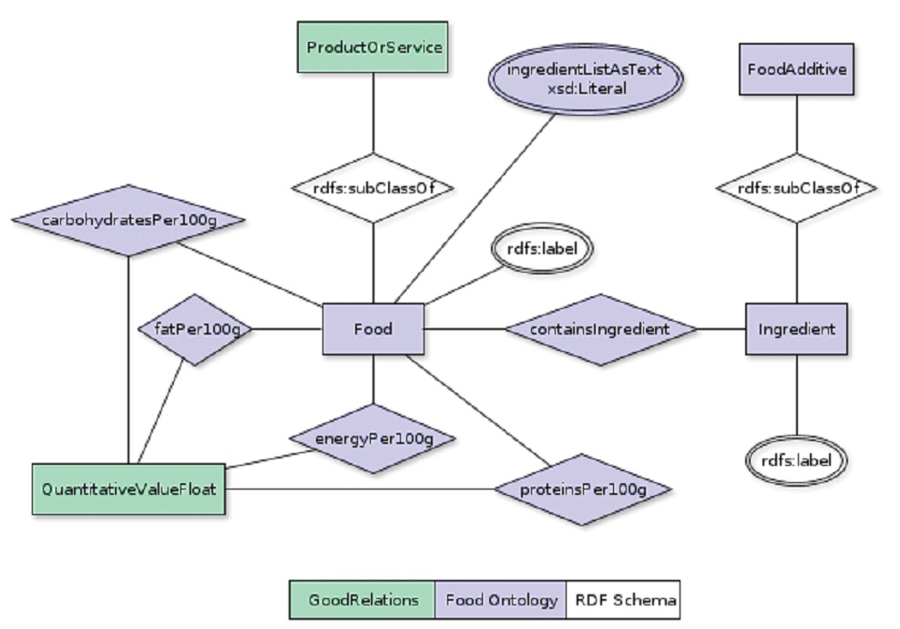

The latest OWL encoding of the Food Ontology can be found here
 Fig. 1. Conceptual model of the Food Ontology
IRI: http://purl.org/goodrelations/v1#ActualProductOrServiceInstance
IRI: http://purl.org/foodontology#BeverageWhiteners
Milk or cream substitute consisting of a vegetable fat-water emulsion in water with milk protein and lactose or vegetable proteins for use in beverages such as coffee and tea. Also includes the same type of products in powdered form. Includes condensed milk analogues, blends of evaporated skimmed milk and vegetable fat and blends of sweetened condensed skimmed milk and vegetable fat.
IRI: http://purl.org/goodrelations/v1#Brand
A brand is the identity of a specific product, service, or business. Use foaf:logo for attaching a brand logo and gr:name or rdfs:label for attaching the brand name.
(Source: Wikipedia, the free encyclopedia, see http://en.wikipedia.org/wiki/Brand)
IRI: http://purl.org/foodontology#BreadAndOrdinaryBakeryWares
Includes all types of non-sweet bakery products and bread-derived products.
IRI: http://purl.org/foodontology#BreadTypeProductsIncludingBreadStuffingAndBreadCrumbs
Includes bread-based products such as croutons, bread stuffing and stuffing mixes, and prepared doughs (e.g., for biscuits). Bread mixes are included in category 07.1.6.
IRI: http://purl.org/foodontology#BreadsAndRolls
Includes yeast-leavened and specialty breads and soda bread.
IRI: http://purl.org/foodontology#BreakfastCereals
IRI: http://purl.org/goodrelations/v1#BusinessEntity
An instance of this class represents the legal agent making (or seeking) a particular offering. This can be a legal body or a person. A business entity has at least a primary mailing address and contact details. For this, typical address standards (vCard) and location data (geo, WGS84) can be attached. Note that the location of the business entity is not necessarily the location from which the product or service is being available (e.g. the branch or store). Use gr:Location for stores and branches.
Example: Siemens Austria AG, Volkswagen Ltd., Peter Miller's Cell phone Shop LLC
Compatibility with schema.org: This class is equivalent to the union of http://schema.org/Person and http://schema.org/Organization.
IRI: http://purl.org/goodrelations/v1#BusinessEntityType
A business entity type is a conceptual entity representing the legal form, the size, the main line of business, the position in the value chain, or any combination thereof, of a gr:BusinessEntity. From the ontological point of view, business entity types are mostly roles that a business entity has in the market. Business entity types are important for specifying eligible customers, since a gr:Offering is often valid only for business entities of a certain size, legal structure, or role in the value chain.
Examples: Consumers, Retailers, Wholesalers, or Public Institutions
IRI: http://purl.org/goodrelations/v1#BusinessFunction
The business function specifies the type of activity or access (i.e., the bundle of rights) offered by the gr:BusinessEntity on the gr:ProductOrService through the gr:Offering. Typical are sell, rental or lease, maintenance or repair, manufacture / produce, recycle / dispose, engineering / construction, or installation.
Licenses and other proprietary specifications of access rights are also instances of this class.
Examples: A particular offering made by Miller Rentals Ltd. says that they (1) sell Volkswagen Golf convertibles, (2) lease out a particular Ford pick-up truck, and (3) dispose car wrecks of any make and model.
IRI: http://purl.org/foodontology#Butter
IRI: http://purl.org/foodontology#Buttermilk
Buttermilk is the nearly milkfat-free fluid remaining from the butter-making process (i.e., the churning fermented or non-fermented milk and cream). Buttermilk is also produced by fermentation of fluid skim milk, either by spontaneous souring by the action of lactic acid-forming or aroma-forming bacteria, or by inoculation of heated milk with pure bacterial cultures (cultured buttermilk).1 Buttermilk may be pasteurized or sterilized.
IRI: http://purl.org/foodontology#CakesCookiesPies
Cakes, cookies and pies (e.g. fruit-filled or custard types)
IRI: http://purl.org/foodontology#CarbonatedWaterBasedFlavouredDrinks
IRI: http://purl.org/foodontology#CerealProducts
Cereals and cereal products, derived from cereal grains, from roots and tubers, pulses, legumes and pith or soft core of palm tree, excluding bakery wares of food category
IRI: http://purl.org/foodontology#CheeseAnalogues
Products that look like cheese, but in which milkfat has been partly or completely replaced by other fats. Includes imitation cheese, imitation cheese mixes, and imitation cheese powders.
IRI: http://purl.org/foodontology#CheeseAndAnalogues
Cheese and cheese analogues are products that have water and fat included within a coagulated milk-protein structure. Products such as cheese sauce (12.6.2), cheese-flavoured snacks (15.1), and composite prepared foods containing cheese as an ingredient (e.g., macaroni and cheese; 16.0) are categorized elsewhere.
IRI: http://purl.org/foodontology#CheesePowder
Dehydrated product prepared from a variety or processed cheese. Does not include grated or shredded cheese (01.6.2.1 for variety cheese; 01.6.4 for processed cheese). Product is intended either to be reconstituted with milk or water to prepare a sauce, or used as-is as an ingredient (e.g.., with cooked macaroni , milk and butter to prepare a macaroni and cheese casserole). Includes spray-dried cheese.
IRI: http://purl.org/foodontology#CocoaChocolateProducts
IRI: http://purl.org/foodontology#CocoaProductsAndChocolateProducts
IRI: http://purl.org/foodontology#ConcentratesForFruitNectar
IRI: http://purl.org/foodontology#ConcentratesForVegetableNectar
IRI: http://purl.org/foodontology#CondensedMilkPlain
Condensed milk is obtained by partial removal of water from milk to which sugar may have been added. For evaporated milk, the water removal may be accomplished by heating.1 Includes partially dehydrated milk, evaporated milk, sweetened condensed milk, and khoa (cow or buffalo milk concentrated by boiling).
IRI: http://purl.org/foodontology#CondensedMilkAndAnaloguesPlain
Includes plain and sweetened types of condensed milk, evaporated milk, and their analogues (including beverage whiteners). Includes products based on skim, part-skim, low-fat and whole milk, blends of evaporated skimmed milk and vegetable fat, and blends of sweetened condensed skimmed milk and vegetable fat.
IRI: http://purl.org/foodontology#Crackers
The term “cracker” refers to a thin, crisp wafer, usually of unsweetened dough. Flavoured crackers (e.g., cheese flavoured) that are consumed as snacks are in 15.1. Examples include: soda crackers, rye crisps, and matzohs.
IRI: http://purl.org/foodontology#CreamAndTheLike
Cream is a fluid dairy product, relatively high in fat content in comparison to milk. Includes all plain fluid, semi-fluid and semi-solid cream and cream analogue products. Flavoured cream products are found in 01.1.2 (beverages) and 01.7 (desserts).
IRI: http://purl.org/foodontology#CreamAnalogues
Cream substitute consisting of a vegetable fat-water emulsion in liquid or powdered form for use other than as a beverage whitener (01.3.2). Includes instant whipped cream toppings and sour cream substitutes.
IRI: http://purl.org/foodontology#DairyBasedDesserts
Dairy-based desserts (e.g. pudding, fruit or flauvored yoghurt)
IRI: http://purl.org/foodontology#DairyBasedDrinks
Dairy-based drinks, flavoured and/or fermented (e.g. chocolate milk, cocoa, eggnog, drinking yoghurt, whey-based drinks)
IRI: http://purl.org/goodrelations/v1#DayOfWeek
The day of the week, used to specify to which day the opening hours of a gr:OpeningHoursSpecification refer.
Examples: Monday, Tuesday, Wednesday,...
IRI: http://purl.org/goodrelations/v1#DeliveryChargeSpecification
A delivery charge specification is a conceptual entity that specifies the additional costs asked for the delivery of a given gr:Offering using a particular gr:DeliveryMethod by the respective gr:BusinessEntity. A delivery charge specification is characterized by (1) a monetary amount per order, specified as a literal value of type float in combination with a currency, (2) the delivery method, (3) the target country or region, and (4) whether this charge includes local sales taxes, namely VAT.
A gr:Offering may be linked to multiple gr:DeliveryChargeSpecification nodes that specify alternative charges for disjoint combinations of target countries or regions, and delivery methods.
Examples: Delivery by direct download is free of charge worldwide, delivery by UPS to Germany is 10 Euros per order, delivery by mail within the US is 5 Euros per order.
The total amount of this charge is specified as a float value of the gr:hasCurrencyValue property. The currency is specified via the gr:hasCurrency datatype property. Whether the price includes VAT or not is indicated by the gr:valueAddedTaxIncluded property. The gr:DeliveryMethod to which this charge applies is specified using the gr:appliesToDeliveryMethod object property. The region or regions to which this charge applies is specified using the gr:eligibleRegions property, which uses ISO 3166-1 and ISO 3166-2 codes.
If the price can only be given as a range, use gr:hasMaxCurrencyValue and gr:hasMinCurrencyValue for the upper and lower bounds.
Important: When querying for the price, always use gr:hasMaxCurrencyValue and gr:hasMinCurrencyValue.
IRI: http://purl.org/goodrelations/v1#DeliveryMethod
A delivery method is a standardized procedure for transferring the product or service to the destination of fulfilment chosen by the customer. Delivery methods are characterized by the means of transportation used, and by the organization or group that is the contracting party for the sending gr:BusinessEntity (this is important, since the contracted party may subcontract the fulfilment to smaller, regional businesses).
Examples: Delivery by mail, delivery by direct download, delivery by UPS
IRI: http://purl.org/goodrelations/v1#DeliveryModeParcelService
A private parcel service as the delivery mode available for a certain offering.
Examples: UPS, DHL
IRI: http://purl.org/foodontology#DriedFruit
Fruit that may or may not be blanched prior to freezing. The product may be frozen in a juice or sugar syrup.1 Examples include frozen fruit salad and frozen strawberries.
IRI: http://purl.org/foodontology#DriedWheyAndWheyProducts
Whey powders are prepared by spray- or roller-drying whey or acid whey from which the major portion of the milkfat has been removed.1
IRI: http://purl.org/foodontology#EdibleIces
This category includes water-based frozen desserts, confections and novelties, such as fruit sorbet, “Italian”-style ice, and flavoured ice. Frozen desserts containing primarily dairy ingredients are included in food category 01.7.
IRI: http://purl.org/foodontology#EmulsifiedSaucesAndDips
Emulsified sauces and dips (e.g. mayonnaise, salad dressing, onion dip)
IRI: http://purl.org/foodontology#FatEmulsionsMainlyOfTypeWaterInOil
IRI: http://purl.org/foodontology#FatsOilsFatsEmulsions
Includes all fat-based products that are derived from vegetable, animal or marine sources, or their mixtures.
IRI: http://purl.org/foodontology#FermentedRennetedMilkProducts
Includes all plain products based on skim, part-skim, low-fat and whole milk. Flavoured products are included in 01.1.2 (beverages) and 01.7 (desserts).
IRI: http://purl.org/foodontology#FermentedMilks
Includes all plain products, including fluid fermented milk, acidified milk and cultured milk. Plain yoghurt, which does not contain flavours or colours, may be found in one of the sub-categories of 01.2.1 depending on whether it is heat-treated after fermentation or not.
IRI: http://purl.org/foodontology#FermentedMilksHeatTreatedAfterFermentation
Products similar to that in 01.2.1.1, except that they have been heat-treated (e.g., sterilized or pasteurized) after fermentation.
IRI: http://purl.org/foodontology#FermentedMilksNotHeatTreatedAfterFermentation
Includes fluid and non-fluid plain products, such as yoghurt.
IRI: http://purl.org/foodontology#FineBakeryWares
IRI: http://purl.org/foodontology#FlavouredProcessedCheese
Processed cheese product that contains added flavours, seasonings, fruit, vegetables and/or meat. Examples include: neufchatel cheese spread with vegetables, pepper jack cheese, cheddar cheese spread with wine, and cheese balls (formed processed cheese coated in nuts, herbs or spices).
IRI: http://purl.org/foodontology#FoodstuffsIntendedForParticularNutritionalUses
Foods for special dietary use are specially processed or formulated to satisfy particular dietary requirements that exist because of a particular physical or physiological condition and/or specific disease and disorder. The composition of these foods must differ significantly from the composition of ordinary foods of comparable nature, if such foods exist.1 Dietetic foods other than those in 13.0 are included in the categories for their standard counterparts.2
IRI: http://purl.org/foodontology#FreshEggs
Fresh in-shell eggs are not expected to contain additives. However, colours may be used for decorating, dyeing or stamping the exterior surfaces of shell eggs. In the FCS, a notation for "for decoration, stamping, marking or branding the product (surface treatment) accommodates this.
IRI: http://purl.org/foodontology#FreshFruit
Fresh fruit is generally free of additives. However, fresh fruit that is coated or cut or peeled for presentation to the consumer may contain additives.
IRI: http://purl.org/foodontology#Fruit
Includes all fresh (04.1.1) and processed (04.1.2) products.
IRI: http://purl.org/foodontology#FruitAndVegetableNectars
IRI: http://purl.org/foodontology#FruitNectar
IRI: http://purl.org/foodontology#HeatTreatedProcessedCommunitedMeatPoultryGameProducts
Includes cooked (including cured and cooked, and dried and cooked), heat-treated (including sterilized) and canned comminuted products. Examples include: pre-grilled beef patties; foie gras and pates; brawn and head cheese; cooked, cured chopped meat; chopped meat boiled in soy sauce (tsukudani); canned corned beef; luncheon meats; meat pastes; cooked meat patties; cooked salami-type products; cooked meatballs; saucises de strasbourg; breakfast sausages; brown-and-serve sausages; and terrines (a cooked chopped meat mixture).
IRI: http://purl.org/foodontology#HerbsAndSpices
IRI: http://purl.org/foodontology#HerbsSpicesSeasoningsCondiments
Herbs, spices, seasonings and condiments (e.g. seasoning for instant noodles)
IRI: http://purl.org/goodrelations/v1#Individual
A gr:Individual is an actual product or service instance, i.e., a single identifiable object or action that creates some increase in utility (in the economic sense) for the individual possessing or using this very object (product) or for the individual in whose favor this very action is being taken (service). Products or services are types of goods in the economic sense. For an overview of goods and commodities in economics, see Milgate (1987).
Examples: MyThinkpad T60, the pint of beer standing in front of me, my Volkswagen Golf, the haircut that I received or will be receiving at a given date and time.
Note 1: In many cases, product or service instances are not explicitly exposed on the Web but only claimed to exist (i.e. existentially quantified). In this case, use gr:SomeItems.
Note 2: This class is the new, shorter form of the former gr:ActualProductOrServiceInstance.
Compatibility with schema.org: This class is a subclass of http://schema.org/Product.
IRI: http://purl.org/goodrelations/v1#License
A license is the specification of a bundle of rights that determines the type of activity or access offered by the gr:BusinessEntity on the gr:ProductOrService through the gr:Offering.
Licenses can be standardized (e.g. LPGL, Creative Commons, ...), vendor-specific, or individually defined for a single offer or product. Whether there is a fee for obtaining the license is specified using the gr:UnitPriceSpecification attached to the gr:Offering. Use foaf:page for linking to a document containing the license, e.g. in PDF or HTML.
IRI: http://purl.org/foodontology#LiquidWheyAndWheyProducts
Whey is the fluid separated from the curd after coagulation of milk, cream, skimmed milk or buttermilk with milk coagulating enzymes during the manufacture of cheese, casein or similar products. Acid whey is obtained after the coagulation of milk, cream, skimmed milk or buttermilk, mainly with acids of the type used for the manufacture of fresh cheese.1
IRI: http://purl.org/goodrelations/v1#Location
A location is a point or area of interest from which a particular product or service is available, e.g. a store, a bus stop, a gas station, or a ticket booth. The difference to gr:BusinessEntity is that the gr:BusinessEntity is the legal entity (e.g. a person or corporation) making the offer, while gr:Location is the store, office, or place. A chain restaurant will e.g. have one legal entity but multiple restaurant locations. Locations are characterized by an address or geographical position and a set of opening hour specifications for various days of the week.
Example: A rental car company may offer the Business Function Lease Out of cars from two locations, one in Fort Myers, Florida, and one in Boston, Massachussetts. Both stations are open 7:00 - 23:00 Mondays through Saturdays.
Note: Typical address standards (vcard) and location data (geo, WGC84) should be attached to a gr:Location node. Since there already exist established vocabularies for this, the GoodRelations ontology does not provide respective attributes. Instead, the use of respective vocabularies is recommended. However, the gr:hasGlobalLocationNumber property is provided for linking to public identifiers for business locations.
Compatibility with schema.org: This class is equivalent to http://schema.org/Place.
IRI: http://purl.org/goodrelations/v1#LocationOfSalesOrServiceProvisioning
DEPRECATED - This class is superseded by gr:Location. Replace all occurrences of gr:LocationOfSalesOrServiceProvisioning by gr:Location, if possible.
IRI: http://purl.org/foodontology#MilkAndButterMilk
Includes plain fluid products only. Includes reconstituted plain milk that contains only dairy ingredients.
IRI: http://purl.org/foodontology#MilkPowderAndCreamPowderAnalogues
Products based on a fat-water emulsion and dried for use other than as a beverage whitener (01.3.2). Examples include imitation dry cream mix and blends of skimmed milk and vegetable fat in powdered form.
IRI: http://purl.org/foodontology#MilkAndDairyBasedDrinks
Includes all plain and flavoured fluid milk products based on skim, part-skim, low-fat and whole milk.
IRI: http://purl.org/foodontology#MilkPowderAndCreamPowder
Milk products obtained by partial removal of water from milk or cream and produced in a powdered form.1 Includes casein and caseinates.2
IRI: http://purl.org/foodontology#MilkPowderCreamPowderPowderAnalogues
Includes plain milk powders, cream powders, or combination of the two, and their analogues. Includes products based on skim, part-skim, low-fat and whole milk.
IRI: http://purl.org/foodontology#MixesForBreadAndOrdinaryBakeryWares
Includes all the mixes containing the dry ingredients to which wet ingredients (e.g., water, milk, oil, butter, eggs) are added to prepare a dough for baked goods from food categories 07.1.1 to 07.1.5. Examples include: French bread mix, tin bread mix, pannetone mix, ciabatta mix, among others. Mixes for fine bakery wares (e.g., cakes, cookies, pancakes) are found in category 07.2.3.
IRI: http://purl.org/foodontology#MixesForFineBakeryWares
Mixes containing the dry ingredients to which wet ingredients (e.g., water, milk, oil, butter, eggs) are added to prepare a dough for fine baked goods. Examples include: cake mix, flour confectionery mix, pancake mix, pie mix, and waffle mix. Prepared dough is found in category 07.1.4. Mixes for ordinary bakery wares (e.g., bread) is found in category 07.1.6.
IRI: http://purl.org/goodrelations/v1#N-Ary-Relations
This is the superclass for all classes that are placeholders for n-ary relations, which OWL cannot represent.
DEPRECATED. Do not use this class in data or queries.
IRI: http://purl.org/foodontology#NaturalMineralWatersAndSourceWaters
Waters obtained directly at the source and packaged close to the source; are characterized by the presence of certain mineral salts in relative proportions and trace elements or other constituents. Natural mineral water may be naturally carbonated (with carbon dioxide from the source), carbonated (with added carbon dioxide of another origin), decarbonated (with less carbon dioxide than present in the water at the source so it does not spontaneously give off carbon dioxide under conditions of standard temperature and pressure), or fortified (with carbon dioxide from the source), and non-carbonated (contains no free carbon dioxide).1
IRI: http://purl.org/foodontology#NonAlcoholicBeverages
This broad category includes waters and carbonated waters (14.1.1), fruit and vegetable juices (14.1.2), fruit and vegetable nectars (14.1.3), water-based flavoured carbonated and non-carbonated drinks (14.1.4), and water-based brewed or steeped beverages such as coffee and tea (14.1.5).
IRI: http://purl.org/goodrelations/v1#Offering
An offering represents the public, not necessarily binding, not necessarily exclusive, announcement by a gr:BusinessEntity to provide (or seek) a certain gr:BusinessFunction for a certain gr:ProductOrService to a specified target audience. An offering is specified by the type of product or service or bundle it refers to, what business function is being offered (sales, rental, ...), and a set of commercial properties. It can either refer to
(1) a clearly specified instance (gr:Individual),
(2) to a set of anonymous instances of a given type (gr:SomeItems),
(3) a product model specification (gr:ProductOrServiceModel), see also section 3.3.3 of the GoodRelations Technical Report.
An offering may be constrained in terms of the eligible type of business partner, countries, quantities, and other commercial properties. The definition of the commercial properties, the type of product offered, and the business function are explained in other parts of this vocabulary in more detail.
Example: Peter Miller offers to repair TV sets made by Siemens, Volkswagen Innsbruck sells a particular instance of a Volkswagen Golf at $10,000.
Compatibility with schema.org: This class is a superclass to http://schema.org/Offer, since gr:Offering can also represent demand.
IRI: http://purl.org/goodrelations/v1#OpeningHoursSpecification
This is a conceptual entity that holds together all information about the opening hours on a given day (gr:DayOfWeek).
IRI: http://schema.org/Organization
IRI: http://purl.org/foodontology#OtherFineBakeryProducts
Includes products that may be eaten as a dessert or as breakfast. Examples include: pancakes, waffles, filled sweet buns (anpan), Danish pastry, wafers or cones for ice cream, flour confectionery, and trifles.
IRI: http://purl.org/foodontology#OtherOrdinaryBakeryProducts
Includes all other ordinary bakery wares, such as cornbread and biscuits. The term “biscuit” in this category refers to a small cake of shortened bread, leavened with baking powder or baking soda. It does not refer to the British “biscuit,” which is a “cookie” or “sweet cracker” included in category 07.2.1.
IRI: http://purl.org/foodontology#PasteurizedCream
Cream subjected to pasteurization by appropriate heat treatment or made from pasteurized milk.1 Includes milk cream and “half-and-half.”
IRI: http://purl.org/goodrelations/v1#PaymentChargeSpecification
A payment charge specification is a conceptual entity that specifies the additional costs asked for settling the payment after accepting a given gr:Offering using a particular gr:PaymentMethod. A payment charge specification is characterized by (1) a monetary amount per order specified as a literal value of type float in combination with a Currency, (2) the payment method, and (3) a whether this charge includes local sales taxes, namely VAT.
A gr:Offering may be linked to multiple payment charge specifications that specify alternative charges for various payment methods.
Examples: Payment by VISA or Mastercard costs a fee of 3 Euros including VAT, payment by bank transfer in advance is free of charge.
The total amount of this surcharge is specified as a float value of the gr:hasCurrencyValue property. The currency is specified via the gr:hasCurrency datatype property. Whether the price includes VAT or not is indicated by the gr:valueAddedTaxIncluded datatype property. The gr:PaymentMethod to which this charge applies is specified using the gr:appliesToPaymentMethod object property.
If the price can only be given as a range, use gr:hasMaxCurrencyValue and gr:hasMinCurrencyValue for the upper and lower bounds.
Important: When querying for the price, always use gr:hasMaxCurrencyValue and gr:hasMinCurrencyValue.
IRI: http://purl.org/goodrelations/v1#PaymentMethod
A payment method is a standardized procedure for transferring the monetary amount for a purchase. Payment methods are characterized by the legal and technical structures used, and by the organization or group carrying out the transaction. This element is mostly used for specifying the types of payment accepted by a gr:BusinessEntity.
Examples: VISA, MasterCard, Diners, cash, or bank transfer in advance.
IRI: http://purl.org/goodrelations/v1#PaymentMethodCreditCard
The subclass of gr:PaymentMethod represents all variants and brands of credit or debit cards as a standardized procedure for transferring the monetary amount for a purchase. It is mostly used for specifying the types of payment accepted by a gr:Business Entity.
Examples: VISA, MasterCard, or American Express.
IRI: http://purl.org/foodontology#PlainProcessedCheese
Processed cheese product that does not contain added flavours, seasonings, fruit, vegetables and/or meat. Examples include: American cheese, requeson.
IRI: http://purl.org/foodontology#PreparedFoods
These foods are not included in the other food categories (01-15) and should be considered on a case-by-case basis. Prepared foods are mixtures of multiple components (e.g., meat, sauce, grain, cheese, vegetables); the components are included in other food categories. Prepared foods require minimal preparation by the consumer (e.g., heating, thawing, rehydrating). Provisions for additives will be listed in this food category in the GSFA only if the additive is needed: (i) solely to have a technological function in the prepared food as sold to the consumer; or (ii) at a use level that has an intentional technological function in the prepared food that exceeds the use level that can be accounted for by carry-over from the individual components.
IRI: http://purl.org/goodrelations/v1#PriceSpecification
The superclass of all price specifications.
IRI: http://purl.org/foodontology#ProcessedCheese
Product with a very long shelf life obtained by melting and emulsifying cheese. Includes products manufactured by heating and emulsifying mixtures of cheese, milkfat, milk protein, milk powder, and water in different amounts. Products may contain other added ingredients, such as aromas, seasonings and fruit, vegetables and/or meat. Product may be spreadable or cut into slices and pieces.1 The term “processed” does not mean cutting, grating, shredding, etc. of cheese. Cheese treated by these mechanical processes are included under food category 01.6.2 (Ripened cheese).
IRI: http://purl.org/foodontology#ProcessedFruit
Includes all forms of processing other than peeling, cutting and surface treating fresh fruit.
IRI: http://purl.org/goodrelations/v1#ProductOrService
The superclass of all classes describing products or services types, either by nature or purpose. Examples for such subclasses are "TV set", "vacuum cleaner", etc. An instance of this class can be either an actual product or service (gr:Individual), a placeholder instance for unknown instances of a mass-produced commodity (gr:SomeItems), or a model / prototype specification (gr:ProductOrServiceModel). When in doubt, use gr:SomeItems.
Examples:
a) MyCellphone123, i.e. my personal, tangible cell phone (gr:Individual)
b) Siemens1234, i.e. the Siemens cell phone make and model 1234 (gr:ProductOrServiceModel)
c) dummyCellPhone123 as a placeholder for actual instances of a certain kind of cell phones (gr:SomeItems)
Note: Your first choice for specializations of gr:ProductOrService should be http://www.productontology.org.
Compatibility with schema.org: This class is (approximately) equivalent to http://schema.org/Product.
IRI: http://purl.org/goodrelations/v1#ProductOrServiceModel
A product or service model is a intangible entity that specifies some characteristics of a group of similar, usually mass-produced products, in the sense of a prototype. In case of mass-produced products, there exists a relation gr:hasMakeAndModel between the actual product or service (gr:Individual or gr:SomeItems) and the prototype (gr:ProductOrServiceModel). GoodRelations treats product or service models as "prototypes" instead of a completely separate kind of entities, because this allows using the same domain-specific properties (e.g. gr:weight) for describing makes and models and for describing actual products.
Examples: Ford T, Volkswagen Golf, Sony Ericsson W123 cell phone
Note: An actual product or service (gr:Individual) by default shares the features of its model (e.g. the weight). However, this requires non-standard reasoning. See http://wiki.goodrelations-vocabulary.org/Axioms for respective rule sets.
Compatibility with schema.org: This class is (approximately) a subclass of http://schema.org/Product.
IRI: http://purl.org/goodrelations/v1#ProductOrServicesSomeInstancesPlaceholder
DEPRECATED - This class is superseded by gr:SomeItems. Replace all occurrences of gr:ProductOrServicesSomeInstancesPlaceholder by gr:SomeItems, if possible.
IRI: http://purl.org/goodrelations/v1#QualitativeValue
A qualitative value is a predefined value for a product characteristic.
Examples: the color "green" or the power cord plug type "US"; the garment sizes "S", "M", "L", and "XL".
Note: Value sets are supported by creating subclasses of this class. Ordinal relations between values (gr:greater, gr:lesser, ...) are provided directly by GoodRelations.
Compatibility with schema.org: This class is equivalent to http://schema.org/Enumeration.
IRI: http://purl.org/goodrelations/v1#QuantitativeValue
A quantitative value is a numerical interval that represents the range of a certain gr:quantitativeProductOrServiceProperty in terms of the lower and upper bounds for a particular gr:ProductOrService. It is to be interpreted in combination with the respective unit of measurement. Most quantitative values are intervals even if they are in practice often treated as a single point value.
Example: a weight between 10 and 25 kilogramms, a length between 10 and 15 milimeters.
Compatibility with schema.org: This class is equivalent to http://schema.org/Quantity.
IRI: http://purl.org/goodrelations/v1#QuantitativeValueFloat
An instance of this class is an actual float value for a quantitative property of a product. This instance is usually characterized by a minimal value, a maximal value, and a unit of measurement.
Examples: The intervals "between 10.0 and 25.4 kilogramms" or "10.2 and 15.5 milimeters".
Compatibility with schema.org: This class is a subclass of http://schema.org/Quantity.
IRI: http://purl.org/goodrelations/v1#QuantitativeValueInteger
An instance of this class is an actual integer value for a quantitative property of a product. This instance is usually characterized by a minimal value, a maximal value, and a unit of measurement.
Example: A seating capacity between 1 and 8 persons.
Note: Users must keep in mind that ranges in here mean that ALL possible values in this interval are covered. (Sometimes, the actual commitment may be less than that: "We sell cars from 2 - 12 seats" does often not really mean that they have cars with 2,3,4,...12 seats.). Someone renting out two types of rowing boats, one that fits for 1 or 2 people, and another that must be operated by 4 people cannot claim to rent boats with a seating capacity between 1 and 4 people. He or she is offering two boat types for 1-2 and 4 persons.
Compatibility with schema.org: This class is a subclass of http://schema.org/Quantity.
IRI: http://purl.org/foodontology#ReadyToEatSavouries
Includes all types of savoury snack foods.
IRI: http://purl.org/foodontology#RennetedMilk
Plain, coagulated milk produced by the action of milk coagulating enzymes. Includes curdled milk. Flavoured renneted milk products are found in category 01.7.
IRI: http://purl.org/foodontology#RindOfRipenedCheese
Refers to the rind only of the cheese.The rind of the cheese is the exterior portion of the cheese mass that initially has the same composition as the interior portion of the cheese, but which may dry after brining and ripening.1
IRI: http://purl.org/foodontology#RipenedCheese
Ripened cheese is not ready for consumption soon after manufacture, but is held under such time and temperature conditions so as to allow the necessary biochemical and physical changes that characterize the specific cheese. For mould-ripened cheese, the ripening is accomplished primarily by the development of characteristic mould growth throughout the interior and/or on the surface of the cheese.1 Ripened cheese may be soft (e.g., camembert), firm (e.g., edam, gouda), hard (e.g., cheddar), or extra-hard. Includes cheese in brine, which is a ripened semi-hard to soft cheese, white to yellowish in colour with a compact texture, and without actual rind that has been preserved in brine until presented to the consumer.2
IRI: http://purl.org/foodontology#RipenedCheeseIncludesRind
Refers to ripened (including mould-ripened) cheese, including rind, or any part thereof, such as cut, shredded, grated or sliced cheese. Examples of ripened cheese include: blue cheese, brie, gouda, havarti, hard grating cheese, and Swiss cheese.
IRI: http://purl.org/foodontology#SaltsSpicesSoupsSaucesSaladsProteinProducts
This is a broad category that includes substances added to food to enhance its aroma and taste (12.1 – salt and salt substitutes; 12.2 – herbs, spices, seasonings and condiments (e.g., seasoning for instant noodles); 12.3 – vinegars; and 12.4 - mustards), certain prepared foods (12.5 – soups and broths; 12.6 – sauces and like products; and 12.7 – salads (e.g., macaroni salad, potato salad) and sandwich spreads, excluding cocoa- and nut-based spreads of food categories 04.2.2.5 and 05.1.3)), and products composed primarily of protein that are derived from soybeans or from other sources (e.g., milk, cereal, or vegetables) (12.9 - soybean-based seasonings and condiments; and 12.10 – protein products other than from soybeans).
IRI: http://purl.org/foodontology#SaucesLikeProducts
IRI: http://purl.org/foodontology#SeasoningsAndCondiments
IRI: http://purl.org/foodontology#SodaBreads
Includes soda breads.
IRI: http://purl.org/goodrelations/v1#SomeItems
A placeholder instance for unknown instances of a mass-produced commodity. This is used as a computationally cheap work-around for such instances that are not individually exposed on the Web but just stated to exist (i.e., which are existentially quantified).
Example: An instance of this class can represent an anonymous set of green Siemens1234 phones. It is different from the gr:ProductOrServiceModel Siemens1234, since this refers to the make and model, and it is different from a particular instance of this make and model (e.g. my individual phone) since the latter can be sold only once.
Note: This class is the new, shorter form of the former gr:ProductOrServicesSomeInstancesPlaceholder.
Compatibility with schema.org: This class is (approximately) a subclass of http://schema.org/Product.
IRI: http://purl.org/foodontology#SteamedBreadsAndBuns
Oriental-style leavened wheat or rice products that are cooked in a steamer. Products may be made with or without filling. In China, products without filling are called steamed bread (mantou), and those with filling are called steamed buns (baozi or bao). Twisted rolls of various shapes (huajuan) may also be prepared.1 Examples include: filled dumplings and steamed bun with meat, jam or other filling (manjyu).
IRI: http://purl.org/foodontology#SterilizedUHTWhippedReducedFatCreams
Includes every cream, regardless of fat content, which has undergone a higher heat-treatment than pasteurization. .Also includes pasteurized creams with a reduced fat content, as well as every cream intended for whipping or being whipped. Sterilized cream is subjected to appropriate heat-treatment in the container in which it is presented to the consumer. Ultra-heat treated (UHT) or ultrapasteurized cream is subjected to the appropriate heat treatment (UHT or ultrapasteurization) in a continuous flow process and aseptically packaged. Cream may also be packaged under pressure (whipped cream).1 Includes whipping cream, heavy cream, whipped pasteurized cream, and whipped cream-type dairy toppings and fillings. Creams or toppings with partial or total replacement of milkfat by other fats are included in sub-category 01.4.4 (cream analogues).
IRI: http://purl.org/foodontology#Sweeteners
Includes all standardized sugars (11.1), non-standardized products (e.g., 11.2, 11.3, 11.4 and 11.6), and natural sweeteners (11.5 – honey).
IRI: http://purl.org/foodontology#TableWatersAndSodaWaters
Includes waters other than natural source waters that may be carbonated by addition of carbon dioxide and may be processed by filtration, disinfection, or other suitable means. These waters may contain added mineral salts. Carbonated and non-carbonated waters containing flavours are found in category 14.1.4. Examples are table water, bottled water with or without added minerals, purified water, seltzer water, club soda, and sparkling water.
IRI: http://purl.org/goodrelations/v1#TypeAndQuantityNode
This class collates all the information about a gr:ProductOrService included in a bundle. If a gr:Offering contains just one item, you can directly link from the gr:Offering to the gr:ProductOrService using gr:includes. If the offering contains multiple items, use an instance of this class for each component to indicate the quantity, unit of measurement, and type of product, and link from the gr:Offering via gr:includesObject.
Example: An offering may include of 100g of Butter and 1 kg of potatoes, or 1 cell phone and 2 headsets.
IRI: http://purl.org/goodrelations/v1#UnitPriceSpecification
A unit price specification is a conceptual entity that specifies the price asked for a given gr:Offering by the respective gr:Business Entity. An offering may be linked to multiple unit price specifications that specify alternative prices for non-overlapping sets of conditions (e.g. quantities or sales regions) or with differing validity periods.
A unit price specification is characterized by (1) the lower and upper limits and the unit of measurement of the eligible quantity, (2) by a monetary amount per unit of the product or service, and (3) whether this prices includes local sales taxes, namely VAT.
Example: The price, including VAT, for 1 kg of a given material is 5 Euros per kg for 0 - 5 kg and 4 Euros for quantities above 5 kg.
The eligible quantity interval for a given price is specified using the object property gr:hasEligibleQuantity, which points to an instance of gr:QuantitativeValue. The currency is specified using the gr:hasCurrency property, which points to an ISO 4217 currency code. The unit of measurement for the eligible quantity is specified using the gr:hasUnitOfMeasurement datatype property, which points to an UN/CEFACT Common Code (3 characters).
In most cases, the appropriate unit of measurement is the UN/CEFACT Common Code "C62" for "Unit or piece", since a gr:Offering is defined by the quantity and unit of measurement of all items included (e.g. "1 kg of bananas plus a 2 kg of apples"). As long at the offering consists of only one item, it is also possible to use an unit of measurement of choice for specifying the price per unit. For bundles, however, only "C62" for "Unit or piece" is a valid unit of measurement.
You can assume that the price is given per unit or piece if there is no gr:hasUnitOfMeasurement property attached to the price.
Whether VAT and sales taxes are included in this price is specified using the property gr:valueAddedTaxIncluded (xsd:boolean).
The price per unit of measurement is specified as a float value of the gr:hasCurrencyValue property. The currency is specified via the gr:hasCurrency datatype property. Whether the price includes VAT or not is indicated by the gr:valueAddedTaxIncluded datatype property.
The property priceType can be used to indicate that the price is a retail price recommendation only (i.e. a list price).
If the price can only be given as a range, use gr:hasMaxCurrencyValue and gr:hasMinCurrencyValue for the upper and lower bounds.
Important: When querying for the price, always use gr:hasMaxCurrencyValue and gr:hasMinCurrencyValue.
Note 1: Due to the complexity of pricing scenarios in various industries, it may be necessary to create extensions of this fundamental model of price specifications. Such can be done easily by importing and refining the GoodRelations ontology.
Note 2: For Google, attaching a gr:validThrough statement to a gr:UnitPriceSpecification is mandatory.
IRI: http://purl.org/foodontology#UnripenedCheese
Unripened cheese, including fresh cheese, is ready for consumption soon after manufacture.1 Examples include cottage cheese (a soft, unripened, coagulated curd cheese), creamed cottage cheese (cottage cheese covered with a creaming mixture),2 cream cheese (rahmfrischkase, an uncured, soft spreadable cheese),3 mozzarella and scamorza cheeses. Includes the whole unripened cheese and unripened cheese rind (for those unripened cheeses with a “skin” such as mozzarella). Most products are plain, however, some, such as cottage cheese and cream cheese, may be flavoured or contain ingredients such as fruit, vegetables or meat. Excludes ripened cream cheese, where cream is a qualifier for a high fat content.
IRI: http://purl.org/foodontology#VegetableNectar
IRI: http://purl.org/goodrelations/v1#WarrantyPromise
This is a conceptual entity that holds together all aspects of the n-ary relation gr:hasWarrantyPromise.
A Warranty promise is an entity representing the duration and scope of services that will be provided to a customer free of charge in case of a defect or malfunction of the gr:ProductOrService. A warranty promise is characterized by its temporal duration (usually starting with the date of purchase) and its gr:WarrantyScope. The warranty scope represents the types of services provided (e.g. labor and parts, just parts) of the warranty included in an gr:Offering. The actual services may be provided by the gr:BusinessEntity making the offering, by the manufacturer of the product, or by a third party. There may be multiple warranty promises associated with a particular offering, which differ in duration and scope (e.g. pick-up service during the first 12 months, just parts and labor for 36 months).
Examples: 12 months parts and labor, 36 months parts
IRI: http://purl.org/goodrelations/v1#WarrantyScope
The warranty scope represents types of services that will be provided free of charge by the vendor or manufacturer in the case of a defect (e.g. labor and parts, just parts), as part of the warranty included in an gr:Offering. The actual services may be provided by the gr:BusinessEntity making the offering, by the manufacturer of the product, or by a third party.
Examples: Parts and Labor, Parts
IRI: http://purl.org/foodontology#WaterBasedFlavouredDrinks
Water-based flavoured drinks, including "sport", "energy" or "electrolyte" drinks and particulated drinks
IRI: http://purl.org/foodontology#Waters
Includes natural waters (14.1.1.1) and other bottled waters (14.1.1.2), each of which may be non-carbonated or carbonated.
IRI: http://purl.org/foodontology#WheyAndWheyProductsExcludingWheyCheeses
Includes a variety of whey-based products in liquid and powdered forms.
IRI: http://purl.org/foodontology#WheyCheese
A solid or semi-solid product obtained by concentration of whey with or without the addition of milk, cream or other materials of milk origin, and moulding of the concentrated product.1 Includes the whole cheese and the rind of the cheese. Different from whey protein cheese (01.6.6).
IRI: http://purl.org/foodontology#WheyProteinCheese
Product containing the protein extracted from the whey component of milk. These products are principally made by coagulation of whey proteins.1 Example: ricotta cheese. Different from whey cheese (01.6.3).
IRI: http://purl.org/foodontology#WholeBrokenOrFlakedGrain
IRI: http://purl.org/foodontology#YeastLeavenedBreadsAndSpecialtyBreads
Includes all types of non-sweet bakery products and bread-derived products.Examples include: white bread, rye bread, pumpernickel bread, raisin bread, whole wheat bread, pain courant francais, malt bread, hamburger rolls, whole wheat rolls, and milk rolls.
IRI: http://purl.org/foodontology#Ham
IRI: http://purl.org/foodontology#ClottedCream
Thickened, viscous cream formed from the action of milk coagulating enzymes. Includes sour cream (cream subjected to lactic acid fermentation achieved as described for buttermilk (01.1.1.2)).1
IRI: http://purl.org/foodontology#E-additive
IRI: http://purl.org/foodontology#Ingredient
IRI: http://purl.org/foodontology#Sausages
IRI: http://purl.org/foodontology#Confectionery
Includes all cocoa and chocolate products (05.1), other confectionery products that may or may not contain cocoa (05.2), chewing gum (05.3), and decorations and icings (05.4), or foods produced solely with any combination of foods conforming to these sub-categories.
IRI: http://purl.org/foodontology#SmokedMeatProducts
IRI: http://purl.org/foodontology#Milk
Fluid milk obtained from milking animals (e.g., cows, sheep, goats, buffalo). Milk is usually heat-treated by pasteurization, ultra-high temperature (UHT) treatment or sterilization.1 Includes skim, part-skim, low-fat and whole milk.
IRI: http://purl.org/foodontology#DairyProducts
Includes all types of dairy products that are derived from the milk of any milking animal (e.g., cow, sheep, goat, buffalo). In this category, a “plain” product is one that is not flavoured, nor contains fruit, vegetables or other non-dairy ingredients, nor is mixed with other non-dairy ingredients, unless permitted by relevant standards. Analogues are products in which milk fat has been partially or wholly replaced by vegetable fats or oils.
IRI: http://purl.org/foodontology#CannedMeat
IRI: http://purl.org/foodontology#MeatProducts
This category includes all types of meat, poultry, and game products, in pieces and cuts or comminuted, fresh (08.1) and processed (08.2 and 08.3).
IRI: http://purl.org/foodontology#Beverages
This major category is divided into the broad categories of non-alcoholic (14.1) and alcoholic (14.2) beverages. Dairy-based beverages are included in 01.1.2.
IRI: http://purl.org/foodontology#ProcessedComminutedMeat
IRI: http://purl.org/foodontology#FruitsAndVegetables
This major category is divided into two categories: 04.1(Fruit) and 04.2 (Vegetables (including mushrooms and fungi, roots and tubers, pulses and legumes, and aloe vera), seaweeds, and nuts and seeds). Each of these categories is further divided into sub-categories for fresh and processed products.
IRI: http://purl.org/foodontology#FoodAdditive
IRI: http://purl.org/foodontology#Food
IRI: http://purl.org/foodontology#FishProducts
This broad category is divided into categories for fresh fish (09.1) and various processed fish products (09.2 – 09.4). This category includes aquatic vertebrates (fish and aquatic mammals (e.g., whales)), aquatic invertebrates ( e.g., jellyfish), as well as mollusks (e.g., clams, snails), crustaceans (e.g., shrimp, crab, lobster), and echinoderms (e.g., sea urchins, sea cucmbers). Fish products may be treated with coatings, such as glazes and spice rubs, prior to marketing to the consumer (e.g., glazed frozen fish fillets). In the FCS, this is indicated with a notation for “use as a glaze or coating (surface treatment).”
IRI: http://purl.org/foodontology#Tallow
IRI: http://purl.org/foodontology#FreshMeat
IRI: http://purl.org/foodontology#FrankfurtersAndWieners
IRI: http://purl.org/foodontology#BakeryWares
IRI: http://purl.org/foodontology#EggsAndEggsProducts
Includes fresh in-shell eggs (10.1), products that may substitute for fresh eggs (10.2) and other egg products (10.3 and 10.4).
IRI: http://purl.org/goodrelations/v1#acceptedPaymentMethods
The gr:PaymentMethod or methods accepted by the gr:BusinessEntity for the given gr:Offering.
IRI: http://purl.org/goodrelations/v1#addOn
This property points from a gr:Offering to additional offerings that can only be obtained in combination with the first offering. This can be used to model supplements and extensions that are available for a surcharge. Any gr:PriceSpecification attached to the secondary offering is to be understood as an additional charge.
IRI: http://purl.org/goodrelations/v1#advanceBookingRequirement
The minimal and maximal amount of time that is required between accepting the gr:Offering and the actual usage of the resource or service. This is mostly relevant for offers regarding hotel rooms, the rental of objects, or the provisioning of services. The duration is specified relatively to the beginning of the usage of the contracted object. It is represented by attaching an instance of the class gr:QuantitativeValueInteger. The lower and upper boundaries are specified using the properties gr:hasMinValueInteger and gr:hasMaxValueInteger to that instance. The unit of measurement is specified using the property gr:hasUnitOfMeasurement with a string holding a UN/CEFACT code suitable for durations, e.g. MON (months), DAY (days), HUR (hours), or MIN (minutes).
The difference to the gr:validFrom and gr:validThrough properties is that those specify the interval during which the gr:Offering is valid, while gr:advanceBookingRequirement specifies the acceptable relative amount of time between accepting the offer and the fulfilment or usage.
IRI: http://purl.org/goodrelations/v1#appliesToDeliveryMethod
This property specifies the gr:DeliveryMethod to which the gr:DeliveryChargeSpecification applies.
IRI: http://purl.org/goodrelations/v1#appliesToPaymentMethod
This property specifies the gr:PaymentMethod to which the gr:PaymentChargeSpecification applies.
IRI: http://purl.org/goodrelations/v1#availableAtOrFrom
This states that a particular gr:Offering is available at or from the given gr:Location (e.g. shop or branch).
IRI: http://purl.org/goodrelations/v1#availableDeliveryMethods
This specifies the gr:DeliveryMethod or methods available for a given gr:Offering.
IRI: http://purl.org/foodontology#carbohydratesPer100g
IRI: http://purl.org/foodontology#containsIngredient
содержит ингредиент
IRI: http://purl.org/goodrelations/v1#deliveryLeadTime
This property can be used to indicate the promised delay between the receipt of the order and the goods leaving the warehouse.
The duration is specified by attaching an instance of gr:QuantitativeValueInteger. The lower and upper boundaries are specified using the properties gr:hasMinValueInteger and gr:hasMaxValueInteger to that instance. A point value can be modeled with the gr:hasValueInteger property. The unit of measurement is specified using the property gr:hasUnitOfMeasurement with a string holding a UN/CEFACT code suitable for durations, e.g. MON (months), DAY (days), HUR (hours), or MIN (minutes).
IRI: http://purl.org/goodrelations/v1#depth
The depth of the product.
Typical unit code(s): CMT for centimeters, INH for inches
IRI: http://purl.org/goodrelations/v1#eligibleCustomerTypes
The types of customers (gr:BusinessEntityType) for which the given gr:Offering is valid.
IRI: http://purl.org/goodrelations/v1#eligibleDuration
The minimal and maximal duration for which the given gr:Offering or gr:License is valid. This is mostly used for offers regarding accommodation, the rental of objects, or software licenses. The duration is specified by attaching an instance of gr:QuantitativeValue. The lower and upper boundaries are specified using the properties gr:hasMinValue and gr:hasMaxValue to that instance. If they are the same, use the gr:hasValue property. The unit of measurement is specified using the property gr:hasUnitOfMeasurement with a string holding a UN/CEFACT code suitable for durations, e.g. MON (months), DAY (days), HUR (hours), or MIN (minutes).
The difference to the gr:validFrom and gr:validThrough properties is that those specify the absiolute interval during which the gr:Offering or gr:License is valid, while gr:eligibleDuration specifies the acceptable duration of the contract or usage.
IRI: http://purl.org/goodrelations/v1#eligibleTransactionVolume
This property can be used to indicate the transaction volume, in a monetary unit, for which the gr:Offering or gr:PriceSpecification is valid. This is mostly used to specify a minimal purchasing volume, to express free shipping above a certain order volume, or to limit the acceptance of credit cards to purchases above a certain amount.
The object is a gr:PriceSpecification that uses the properties gr:hasMaxCurrencyValue and gr:hasMinCurrencyValue to indicate the lower and upper boundaries and gr:hasCurrency to indicate the currency using the ISO 4217 standard (3 characters).
IRI: http://purl.org/foodontology#energyPer100g
IRI: http://purl.org/goodrelations/v1#equal
This ordering relation for qualitative values indicates that the subject is equal to the object.
has characteristics: symmetric, transitive
IRI: http://purl.org/foodontology#fatPer100g
IRI: http://purl.org/goodrelations/v1#greater
This ordering relation for qualitative values indicates that the subject is greater than the object.
has characteristics: transitive
IRI: http://purl.org/goodrelations/v1#greaterOrEqual
This ordering relation for qualitative values indicates that the subject is greater than or equal to the object.
has characteristics: transitive
IRI: http://purl.org/goodrelations/v1#hasBrand
This specifies the brand or brands (gr:Brand) associated with a gr:ProductOrService, or the brand or brands maintained by a gr:BusinessEntity.
IRI: http://purl.org/goodrelations/v1#hasBusinessFunction
This specifies the business function of the gr:Offering, i.e. whether the gr:BusinessEntity is offering to sell, to lease, or to repair the particular type of product. In the case of bundles, it is also possible to attach individual business functions to each gr:TypeAndQuantityNode. The business function of the main gr:Offering determines the business function for all included objects or services, unless a business function attached to a gr:TypeAndQuantityNode overrides it.
Note: While it is possible that an entity is offering multiple types of business functions for the same set of objects (e.g. rental and sales), this should usually not be stated by attaching multiple business functions to the same gr:Offering, since the gr:UnitPriceSpecification for the varying business functions will typically be very different.
IRI: http://purl.org/goodrelations/v1#hasEligibleQuantity
This specifies the interval and unit of measurement of ordering quantities for which the gr:Offering or gr:PriceSpecification is valid. This allows e.g. specifying that a certain freight charge is valid only for a certain quantity.
Note that if an offering is a bundle, i.e. it consists of more than one unit of a single type of good, or if the unit of measurement for the good is different from unit (Common Code C62), then gr:hasEligibleQuantity refers to units of this bundle. In other words, "C62" for "Units or pieces" is usually the appropriate unit of measurement.
IRI: http://purl.org/goodrelations/v1#hasInventoryLevel
This property specifies the current approximate inventory level for gr:SomeItems. The unit of measurement and the point value or interval are indicated using the attached gr:QuantitativeValueFloat instance.
This property can also be attached to a gr:Offering in cases where the included products are not modeled in more detail.
IRI: http://purl.org/goodrelations/v1#hasMakeAndModel
This states that an actual product instance (gr:Individual) or a placeholder instance for multiple, unidentified such instances (gr:SomeItems) is one occurence of a particular gr:ProductOrServiceModel.
Example: myFordT hasMakeAndModel FordT.
IRI: http://purl.org/goodrelations/v1#hasManufacturer
This object property links a gr:ProductOrService to the gr:BusinessEntity that produces it. Mostly used with gr:ProductOrServiceModel.
IRI: http://purl.org/goodrelations/v1#hasNext
This ordering relation for gr:DayOfWeek indicates that the subject is directly followed by the object.
Example: Monday hasNext Tuesday
Since days of the week are a cycle, this property is not transitive.
IRI: http://purl.org/goodrelations/v1#hasOpeningHoursDayOfWeek
This specifies the gr:DayOfWeek to which the gr:OpeningHoursSpecification is related.
Note: Use multiple instances of gr:OpeningHoursSpecification for specifying the opening hours for multiple days if the opening hours differ.
IRI: http://purl.org/goodrelations/v1#hasOpeningHoursSpecification
This property links a gr:Location to a gr:OpeningHoursSpecification.
IRI: http://purl.org/goodrelations/v1#hasPOS
This property states that the respective gr:Location is a point of sale for the respective gr:BusinessEntity. It allows linking those two types of entities without the need for a particular gr:Offering.
IRI: http://purl.org/goodrelations/v1#hasPrevious
This ordering relation for gr:DayOfWeek indicates that the subject is directly preceeded by the object.
Example: Tuesday hasPrevious Monday
Since days of the week are a cycle, this property is not transitive.
IRI: http://purl.org/goodrelations/v1#hasPriceSpecification
This links a gr:Offering to a gr:PriceSpecification or specifications. There can be unit price specifications, payment charge specifications, and delivery charge specifications. For each type, multiple specifications for the same gr:Offering are possible, e.g. for different quantity ranges or for different currencies, or for different combinations of gr:DeliveryMethod and target destinations.
Recommended retail prices etc. can be marked by the gr:priceType property of the gr:UnitPriceSpecification.
IRI: http://purl.org/goodrelations/v1#hasWarrantyPromise
This specifies the gr:WarrantyPromise made by the gr:BusinessEntity for the given gr:Offering.
IRI: http://purl.org/goodrelations/v1#hasWarrantyScope
This states the gr:WarrantyScope of a given gr:WarrantyPromise.
IRI: http://purl.org/goodrelations/v1#height
The height of the product.
Typical unit code(s): CMT for centimeters, INH for inches
IRI: http://schema.org/image
IRI: http://purl.org/goodrelations/v1#includes
This object property is a shortcut for the original gr:includesObject property for the common case of having exactly one single gr:ProductOrService instance included in an Offering.
When linking to an instance of gr:SomeItems or gr:Individual, it is equivalent to using a gr:TypeAndQuantityNode with gr:hasUnitOfMeasurement="C62"^^xsd:string and gr:amountOfThisGood="1.0"^^xsd:float for that good.
When linking to a gr:ProductOrServiceModel, it is equivalent to
1. defining an blank node for a gr:SomeItems
2. linking that blank node via gr:hasMakeAndModel to the gr:ProductOrServiceModel, and
3. linking from the gr:Offering to that blank node using another blank node of type gr:TypeAndQuantityNode with gr:hasUnitOfMeasurement="C62"^^xsd:string and gr:amountOfThisGood="1.0"^^xsd:float for that good.
IRI: http://purl.org/goodrelations/v1#includesObject
This object property links a gr:Offering to one or multiple gr:TypeAndQuantityNode or nodes that specify the components that are included in the respective offer.
IRI: http://purl.org/goodrelations/v1#isAccessoryOrSparePartFor
This states that a particular gr:ProductOrService is an accessory or spare part for another product or service.
IRI: http://purl.org/goodrelations/v1#isConsumableFor
This states that a particular gr:ProductOrService is a consumable for another product or service.
IRI: http://purl.org/goodrelations/v1#isSimilarTo
This states that a given gr:ProductOrService is similar to another product or service. Of course, this is a subjective statement; when interpreting it, the trust in the origin of the statement should be taken into account.
IRI: http://purl.org/goodrelations/v1#isVariantOf
This states that a particular gr:ProductOrServiceModel is a variant of another product or service model. It is pretty safe to infer that the variant inherits all gr:quantitativeProductOrServiceProperty, gr:qualitativeProductOrServiceProperty, and gr:datatypeProductOrServiceProperty values that are defined for the first gr:ProductOrServiceModel.
Example:
foo:Red_Ford_T_Model gr:isVariantOf foo:Ford_T_Model
IRI: http://purl.org/goodrelations/v1#lesser
This ordering relation for gr:QualitativeValue pairs indicates that the subject is lesser than the object.
has characteristics: transitive
IRI: http://purl.org/goodrelations/v1#lesserOrEqual
This ordering relation for gr:QualitativeValue pairs indicates that the subject is lesser than or equal to the object.
has characteristics: transitive
IRI: http://purl.org/goodrelations/v1#nonEqual
This ordering relation for gr:QualitativeValue pairs indicates that the subject is not equal to the object.
has characteristics: symmetric
IRI: http://purl.org/goodrelations/v1#offers
This links a gr:BusinessEntity to the offers (gr:Offering) it makes. If you want to express interest in receiving offers, use gr:seeks instead.
IRI: http://purl.org/goodrelations/v1#owns
This property indicates that a particular person or business owns a particular product. It can be used to expose the products in one's posession in order to empower recommender systems to suggest matching offers.
Note that the product must be an instance of the class gr:Individual.
This property can also be safely applied to foaf:Agent instances.
IRI: http://purl.org/goodrelations/v1#predecessorOf
This property indicates that the subject is a previous, often discontinued variant of the gr:ProductOrServiceModel used as the object.
Example: Golf III predecessorOf Golf IV
This relation is transitive.
has characteristics: transitive
IRI: http://purl.org/foodontology#proteinsPer100g
IRI: http://purl.org/goodrelations/v1#qualitativeProductOrServiceProperty
This is the super property of all qualitative properties for products and services. All properties in product or service ontologies for which gr:QualitativeValue instances are specified are subproperties of this property.
IRI: http://purl.org/goodrelations/v1#quantitativeProductOrServiceProperty
This is the super property of all quantitative properties for products and services. All properties in product or service ontologies that specify quantitative characteristics, for which an interval is at least theoretically an appropriate value, are subproperties of this property.
IRI: http://purl.org/goodrelations/v1#seeks
This links a gr:BusinessEntity to gr:Offering nodes that describe what the business entity is interested in (i.e., the buy side). If you want to express interest in offering something, use gr:offers instead. Note that this substitutes the former gr:BusinessFunction gr:Buy, which is now deprecated.
IRI: http://purl.org/goodrelations/v1#successorOf
This property indicates that the subject is a newer, often updated or improved variant of the gr:ProductOrServiceModel used as the object.
Example: Golf III successorOf Golf II
This relation is transitive.
has characteristics: transitive
IRI: http://purl.org/goodrelations/v1#typeOfGood
This specifies the gr:ProductOrService that the gr:TypeAndQuantityNode is referring to.
IRI: http://purl.org/goodrelations/v1#valueReference
The superclass of properties that link a gr:QuantitativeValue or a gr:QualitativeValue to a second gr:QuantitativeValue or a gr:QualitativeValue that provides additional information on the original value. A good modeling practice is to define specializations of this property (e.g. foo:referenceTemperature) for your particular domain.
IRI: http://purl.org/goodrelations/v1#weight
The weight of the gr:ProductOrService.
Typical unit code(s): GRM for gram, KGM for kilogram, LBR for pound
IRI: http://purl.org/goodrelations/v1#width
The width of the gr:ProductOrService.
Typical unit code(s): CMT for centimeters, INH for inches
IRI: http://purl.org/goodrelations/v1#amountOfThisGood
This property specifies the quantity of the goods included in the gr:Offering via this gr:TypeAndQuantityNode. The quantity is given in the unit of measurement attached to the gr:TypeAndQuantityNode.
IRI: http://purl.org/goodrelations/v1#availabilityEnds
This property specifies the end of the availability of the gr:ProductOrService included in the gr:Offering.
The difference to the properties gr:validFrom and gr:validThrough is that those specify the period of time during which the offer is valid and can be accepted.
Example: I offer to lease my boat for the period of August 1 - August 31, 2010, but you must accept by offer no later than July 15.
A time-zone should be specified. For a time in GMT/UTC, simply add a "Z" following the time:
2008-05-30T09:30:10Z.
Alternatively, you can specify an offset from the UTC time by adding a positive or negative time following the time:
2008-05-30T09:30:10-09:00
or
2008-05-30T09:30:10+09:00.
Note: There is another property gr:availableAtOrFrom, which is used to indicate the gr:Location (e.g. store or shop) from which the goods would be available.
IRI: http://purl.org/goodrelations/v1#availabilityStarts
This property specifies the beginning of the availability of the gr:ProductOrService included in the gr:Offering.
The difference to the properties gr:validFrom and gr:validThrough is that those specify the period of time during which the offer is valid and can be accepted.
Example: I offer to lease my boat for the period of August 1 - August 31, 2010, but you must accept by offer no later than July 15.
A time-zone should be specified. For a time in GMT/UTC, simply add a "Z" following the time:
2008-05-30T09:30:10Z.
Alternatively, you can specify an offset from the UTC time by adding a positive or negative time following the time:
2008-05-30T09:30:10-09:00
or
2008-05-30T09:30:10+09:00.
Note: There is another property gr:availableAtOrFrom, which is used to indicate the gr:Location (e.g. store or shop) from which the goods would be available.
IRI: http://purl.org/goodrelations/v1#billingIncrement
This property specifies the minimal quantity and rounding increment that will be the basis for the billing.
The unit of measurement is specified by the UN/CEFACT code attached to the gr:UnitPriceSpecification via the gr:hasUnitOfMeasurement property.
Examples:
- The price for gasoline is 4 USD per gallon at the pump, but you will be charged in units of 0.1 gallons.
- The price for legal consulting is 100 USD per hour, but you will be charged in units of 15 minutes.
This property makes sense only for instances of gr:Offering that include not more than one type of good or service.
IRI: http://purl.org/goodrelations/v1#category
The name of a category to which this gr:ProductOrService, gr:Offering, gr:BusinessEntity, or gr:Location belongs.
Note 1: For products, it is better to add an rdf:type statement referring to a GoodRelations-compliant ontology for vertical industries instead, but if you just have a short text label, gr:category is simpler.
Note 2: You can use greater signs or slashes to informally indicate a category hierarchy, e.g. "restaurants/asian_restaurants" or "cables > usb_cables"
IRI: http://purl.org/goodrelations/v1#closes
The closing hour of the gr:Location on the given gr:DayOfWeek.
If no time-zone suffix is included, the time is given in the local time valid at the gr:Location.
For a time in GMT/UTC, simply add a "Z" following the time:
09:30:10Z.
Alternatively, you can specify an offset from the UTC time by adding a positive or negative time following the time:
09:30:10-09:00
09:30:10+09:00.
Note 1: Use 00:00:00 for the first second of the respective day and 23:59:59 for the last second of that day.
Note 2: If a store opens at 17:00 on Saturdays and closes at 03:00:00 a.m. next morning, use two instances of this class, one with 17:00:00 - 23:59:59 for Saturday and another one with 00:00:00 - 03:00:00 for Sunday.
Note 3: If the shop re-opens on the same day of the week or set of days of the week, you must create a second instance of gr:OpeningHoursSpecification.
IRI: http://purl.org/goodrelations/v1#color
The color of the product.
IRI: http://purl.org/goodrelations/v1#condition
A textual description of the condition of the product or service, or the products or services included in the offer (when attached to a gr:Offering)
IRI: http://purl.org/goodrelations/v1#datatypeProductOrServiceProperty
This property is the super property for all pure datatype properties that can be used to describe a gr:ProductOrService.
In products and services ontologies, only such properties that are no quantitative properties and that have no predefined gr:QualitativeValue instances are subproperties of this property. In practice, this refers to a few integer properties for which the integer value represents qualitative aspects, for string datatypes (as long as no predefined values exist), for boolean datatype properties, and for dates and times.
IRI: http://purl.org/goodrelations/v1#description
A short textual description of the resource.
This property is semantically equivalent to rdfs:comment and just meant as a handy shortcut for marking up data.
IRI: http://purl.org/goodrelations/v1#durationOfWarrantyInMonths
This property specifies the duration of the gr:WarrantyPromise in months.
IRI: http://purl.org/goodrelations/v1#eligibleRegions
This property specifies the geo-political region or regions for which the gr:Offering, gr:License, or gr:DeliveryChargeSpecification is valid using the two-character version of ISO 3166-1 (ISO 3166-1 alpha-2) for regions or ISO 3166-2 , which breaks down the countries from ISO 3166-1 into administrative subdivisions.
Important: Do NOT use 3-letter ISO 3166-1 codes!
IRI: http://purl.org/goodrelations/v1#hasCurrency
The currency for all prices in the gr:PriceSpecification given using the ISO 4217 standard (3 characters).
IRI: http://purl.org/goodrelations/v1#hasCurrencyValue
This property specifies the amount of money for a price per unit, shipping charges, or payment charges. The currency and other relevant details are attached to the respective gr:PriceSpecification etc.
For a gr:UnitPriceSpecification, this is the price for one unit or bundle (as specified in the unit of measurement of the unit price specification) of the respective gr:ProductOrService. For a gr:DeliveryChargeSpecification or a gr:PaymentChargeSpecification, it is the price per delivery or payment.
GoodRelations also supports giving price information as intervals only. If this is needed, use gr:hasMaxCurrencyValue for the upper bound and gr:hasMinCurrencyValue for the lower bound.
Using gr:hasCurrencyValue sets the upper and lower bounds to the same given value, i.e., x gr:hasCurrencyValue y implies x gr:hasMinCurrencyValue y, x gr:hasMaxCurrencyValue y.
IRI: http://purl.org/goodrelations/v1#hasDUNS
The Dun & Bradstreet DUNS number for identifying a gr:BusinessEntity. The Dun & Bradstreet DUNS is a nine-digit number used to identify legal entities (but usually not branches or locations of logistical importance only).
IRI: http://purl.org/goodrelations/v1#hasEAN_UCC-13
The EAN·UCC-13 code of the given gr:ProductOrService or gr:Offering. This code is now officially called GTIN-13 (Global Trade Identifier Number) or EAN·UCC-13. Former 12-digit UPC codes can be converted into EAN·UCC-13 code by simply adding a preceeding zero.
Note 1: When using this property for searching by 12-digit UPC codes, you must add a preceeding zero digit.
Note 2: As of January 1, 2007, the former ISBN numbers for books etc. have been integrated into the EAN·UCC-13 code. For each old ISBN-10 code, there exists a proper translation into EAN·UCC-13 by adding "978" or "979" as prefix. Since the old ISBN-10 is now deprecated, GoodRelations does not provide a property for ISBNs.
IRI: http://purl.org/goodrelations/v1#hasGlobalLocationNumber
The Global Location Number (GLN, sometimes also referred to as International Location Number or ILN) of the respective gr:BusinessEntity or gr:Location.
The Global Location Number is a thirteen-digit number used to identify parties and physical locations.
IRI: http://purl.org/goodrelations/v1#hasGTIN-14
The Global Trade Item Number (GTIN-14) of the given gr:ProductOrService or gr:Offering.
IRI: http://purl.org/goodrelations/v1#hasGTIN-8
The 8-digit Global Trade Item Number (GTIN-8) of the given gr:ProductOrService or gr:Offering, also known as EAN/UCC-8 (8-digit EAN).
IRI: http://purl.org/goodrelations/v1#hasISICv4
The International Standard of Industrial Classification of All Economic Activities (ISIC), Revision 4 code for a particular gr:BusinessEntity or gr:Location. See http://unstats.un.org/unsd/cr/registry/isic-4.asp for more information.
Note: While ISIC codes are sometimes misused for classifying products or services, they are designed and suited only for classifying business establishments.
IRI: http://purl.org/goodrelations/v1#hasMaxCurrencyValue
This property specifies the UPPER BOUND of the amount of money for a price RANGE per unit, shipping charges, or payment charges. The currency and other relevant details are attached to the respective gr:PriceSpecification etc.
For a gr:UnitPriceSpecification, this is the UPPER BOUND for the price for one unit or bundle (as specified in the unit of measurement of the unit price specification) of the respective gr:ProductOrService. For a gr:DeliveryChargeSpecification or a gr:PaymentChargeSpecification, it is the UPPER BOUND of the price per delivery or payment.
Using gr:hasCurrencyValue sets the upper and lower bounds to the same given value, i.e., x gr:hasCurrencyValue y implies x gr:hasMinCurrencyValue y, x gr:hasMaxCurrencyValue y.
IRI: http://purl.org/goodrelations/v1#hasMaxValue
This property captures the upper limit of a gr:QuantitativeValue instance.
IRI: http://purl.org/goodrelations/v1#hasMaxValueFloat
This property captures the upper limit of a gr:QuantitativeValueFloat instance.
IRI: http://purl.org/goodrelations/v1#hasMaxValueInteger
This property captures the upper limit of a gr:QuantitativeValueInteger instance.
IRI: http://purl.org/goodrelations/v1#hasMinCurrencyValue
This property specifies the LOWER BOUND of the amount of money for a price RANGE per unit, shipping charges, or payment charges. The currency and other relevant details are attached to the respective gr:PriceSpecification etc.
For a gr:UnitPriceSpecification, this is the LOWER BOUND for the price for one unit or bundle (as specified in the unit of measurement of the unit price specification) of the respective gr:ProductOrService. For a gr:DeliveryChargeSpecification or a gr:PaymentChargeSpecification, it is the LOWER BOUND of the price per delivery or payment.
Using gr:hasCurrencyValue sets the upper and lower bounds to the same given value, i.e., x gr:hasCurrencyValue y implies x gr:hasMinCurrencyValue y, x gr:hasMaxCurrencyValue y.
IRI: http://purl.org/goodrelations/v1#hasMinValue
This property captures the lower limit of a gr:QuantitativeValue instance.
IRI: http://purl.org/goodrelations/v1#hasMinValueFloat
This property captures the lower limit of a gr:QuantitativeValueFloat instance.
IRI: http://purl.org/goodrelations/v1#hasMinValueInteger
This property captures the lower limit of a gr:QuantitativeValueInteger instance.
IRI: http://purl.org/goodrelations/v1#hasMPN
The Manufacturer Part Number or MPN is a unique identifier for a product, service, or bundle from the perspective of a particular manufacturer. MPNs can be assigned to products or product datasheets, or bundles. Accordingly, the domain of this property is the union of gr:ProductOrService (the common superclass of goods and datasheets), and gr:Offering.
Important: Be careful when assuming two products or services instances or offering instances to be identical based on the MPN. Since MPNs are unique only for the same gr:BusinessEntity, this holds only when the two MPN values refer to the same gr:BusinessEntity. Such can be done by taking into account the provenance of the data.
Usually, the properties gr:hasEAN_UCC-13 and gr:hasGTIN-14 are much more reliable identifiers, because they are globally unique.
See also http://en.wikipedia.org/wiki/Part_number
IRI: http://purl.org/goodrelations/v1#hasNAICS
The North American Industry Classification System (NAICS) code for a particular gr:BusinessEntity.
See http://www.census.gov/eos/www/naics/ for more details.
Note: While NAICS codes are sometimes misused for classifying products or services, they are designed and suited only for classifying business establishments.
IRI: http://purl.org/goodrelations/v1#hasStockKeepingUnit
The Stock Keeping Unit, or SKU is a unique identifier for a product, service, or bundle from the perspective of a particular supplier, i.e. SKUs are mostly assigned and serialized at the merchant level.
Examples of SKUs are the ordering or parts numbers used by a particular Web shop or catalog.
Consequently, the domain of gr:hasStockKeepingUnit is the union of the classes gr:Offering and gr:ProductOrService.
If attached to a gr:Offering, the SKU will usually reflect a merchant-specific identifier, i.e. one valid only for that particular retailer or shop.
If attached to a gr:ProductOrServiceModel, the SKU can reflect either the identifier used by the merchant or the part number used by the official manufacturer of that part. For the latter, gr:hasMPN is a better choice.
Important: Be careful when assuming two products or services instances or offering instances to be identical based on the SKU. Since SKUs are unique only for the same gr:BusinessEntity, this can be assumed only when you are sure that the two SKU values refer to the same business entity. Such can be done by taking into account the provenance of the data. As long as instances of gr:Offering are concerned, you can also check that the offerings are being offered by the same gr:Business Entity.
Usually, the properties gr:hasEAN_UCC-13 and gr:hasGTIN-14 are much more reliable identifiers, because they are globally unique.
See also http://en.wikipedia.org/wiki/Stock_Keeping_Unit.
IRI: http://purl.org/goodrelations/v1#hasUnitOfMeasurement
The unit of measurement for a gr:QuantitativeValue, a gr:UnitPriceSpecification, or a gr:TypeAndQuantityNode given using the UN/CEFACT Common Code (3 characters).
IRI: http://purl.org/goodrelations/v1#hasValue
This subproperty specifies that the upper and lower limit of the given gr:QuantitativeValue are identical and have the respective value. It is a shortcut for such cases where a quantitative property is (at least practically) a single point value and not an interval.
IRI: http://purl.org/goodrelations/v1#hasValueFloat
This subproperty specifies that the upper and lower limit of the given gr:QuantitativeValueFloat are identical and have the respective float value. It is a shortcut for such cases where a quantitative property is (at least practically) a single point value and not an interval.
IRI: http://purl.org/goodrelations/v1#hasValueInteger
This subproperty specifies that the upper and lower limit of the given gr:QuantitativeValueInteger are identical and have the respective integer value. It is a shortcut for such cases where a quantitative property is (at least practically) a single point value and not an interval.
IRI: http://purl.org/foodontology#ingredientsListAsText
IRI: http://purl.org/goodrelations/v1#isListPrice
This boolean attribute indicates whether a gr:UnitPriceSpecification is a list price (usually a vendor recommendation) or not. "true" indicates it is a list price, "false" indicates it is not.
DEPRECATED. Use the gr:priceType property instead.
IRI: http://purl.org/goodrelations/v1#legalName
The legal name of the gr:BusinessEntity.
IRI: http://purl.org/goodrelations/v1#name
A short text describing the respective resource.
This property is semantically equivalent to dcterms:title and rdfs:label and just meant as a handy shortcut for marking up data.
IRI: http://purl.org/goodrelations/v1#opens
The opening hour of the gr:Location on the given gr:DayOfWeek.
If no time-zone suffix is included, the time is given in the local time valid at the gr:Location.
For a time in GMT/UTC, simply add a "Z" following the time:
09:30:10Z.
Alternatively, you can specify an offset from the UTC time by adding a positive or negative time following the time:
09:30:10-09:00
or
09:30:10+09:00.
Note 1: Use 00:00:00 for the first second of the respective day and 23:59:59 for the last second of that day.
Note 2: If a store opens at 17:00 on Saturdays and closes at 03:00:00 a.m. next morning, use 17:00:00 - 23:59:59 for Saturday and 00:00:00 - 03:00:00 for Sunday.
Note 3: If the shop re-opens on the same day of the week or set of days of the week, you must create a second instance of gr:OpeningHoursSpecification.
IRI: http://purl.org/goodrelations/v1#priceType
This attribute can be used to distinguish multiple different price specifications for the same gr:Offering. It supersedes the former gr:isListPrice property. The following values are recommended:
The absence of this property marks the actual sales price.
SRP: "suggested retail price" - applicable for all sorts of a non-binding retail price recommendations, e.g. such published by the manufacturer or the distributor. This value replaces the former gr:isListPrice property.
INVOICE: The invoice price, mostly used in the car industry - this is the price a dealer pays to the manufacturer, excluding rebates and charges.
IRI: http://purl.org/goodrelations/v1#serialNumber
The serial number or any alphanumeric identifier of a particular product. Note that serial number are unique only for the same brand or the same model, so you cannot infer from two occurrences of the same serial number that the objects to which they are attached are identical.
This property can also be attached to a gr:Offering in cases where the included products are not modeled in more detail.
IRI: http://purl.org/goodrelations/v1#taxID
The Tax / Fiscal ID of the gr:BusinessEntity, e.g. the TIN in the US or the CIF/NIF in Spain. It is usually assigned by the country of residence
IRI: http://purl.org/goodrelations/v1#validFrom
This property specifies the beginning of the validity of the gr:Offering, gr:PriceSpecification, gr:License, or gr:OpeningHoursSpecification.
A time-zone should be specified. For a time in GMT/UTC, simply add a "Z" following the time:
2008-05-30T09:30:10Z.
Alternatively, you can specify an offset from the UTC time by adding a positive or negative time following the time:
2008-05-30T09:30:10-09:00
or
2008-05-30T09:30:10+09:00.
Note: If multiple contradicting instances of a gr:Offering, gr:PriceSpecification, or gr:OpeningHoursSpecification exist, it is a good heuristics to assume that
1. Information with validity information for the respective period of time ranks higher than information without validity information.
2. Among conflicting nodes both having validity information, the one with the shorter validity span ranks higher.
IRI: http://purl.org/goodrelations/v1#validThrough
This property specifies the end of the validity of the gr:Offering, gr:PriceSpecification, gr:License, or gr:OpeningHoursSpecification.
A time-zone should be specified. For a time in GMT/UTC, simply add a "Z" following the time:
2008-05-30T09:30:10Z.
Alternatively, you can specify an offset from the UTC time by adding a positive or negative time following the time:
2008-05-30T09:30:10-09:00
or
2008-05-30T09:30:10+09:00.
Note 1: If multiple contradicting instances of a gr:Offering, gr:PriceSpecification, or gr:OpeningHoursSpecification exist, it is a good heuristics to assume that
1. Information with validity information for the respective period of time ranks higher than information without validity information.
2. Among conflicting nodes both having validity information, the one with the shorter validity span ranks higher.
Note 2: For Google, attaching a gr:validThrough statement to a gr:UnitPriceSpecification is mandatory.
IRI: http://purl.org/goodrelations/v1#valueAddedTaxIncluded
This property specifies whether the applicable value-added tax (VAT) is included in the price of the gr:PriceSpecification or not.
Note: This is a simple representation which may not properly reflect all details of local taxation.
IRI: http://purl.org/goodrelations/v1#vatID
The Value-added Tax ID of the gr:BusinessEntity. See http://en.wikipedia.org/wiki/Value_added_tax_identification_number for details.
IRI: http://purl.org/foodontology#proteinsPer100gAsDouble
IRI: http://purl.org/foodontology#fatPer100gAsDouble
IRI: http://purl.org/foodontology#containsGMO
has characteristics: functional
IRI: http://purl.org/foodontology#carbohydratesPer100gAsDouble
IRI: http://purl.org/foodontology#energyPer100gAsDouble
IRI: http://purl.org/foodontology#E100
IRI: http://purl.org/foodontology#E1000
IRI: http://purl.org/foodontology#E1001
IRI: http://purl.org/foodontology#E101
IRI: http://purl.org/foodontology#E102
IRI: http://purl.org/foodontology#E103
IRI: http://purl.org/foodontology#E104
IRI: http://purl.org/foodontology#E105
IRI: http://purl.org/foodontology#E106
IRI: http://purl.org/foodontology#E107
IRI: http://purl.org/foodontology#E110
IRI: http://purl.org/foodontology#E1100
IRI: http://purl.org/foodontology#E1101
IRI: http://purl.org/foodontology#E1102
IRI: http://purl.org/foodontology#E1103
IRI: http://purl.org/foodontology#E1104
IRI: http://purl.org/foodontology#E1105
IRI: http://purl.org/foodontology#E111
IRI: http://purl.org/foodontology#E120
IRI: http://purl.org/foodontology#E1200
IRI: http://purl.org/foodontology#E1201
IRI: http://purl.org/foodontology#E1202
IRI: http://purl.org/foodontology#E1203
IRI: http://purl.org/foodontology#E1204
IRI: http://purl.org/foodontology#E121
IRI: http://purl.org/foodontology#E122
IRI: http://purl.org/foodontology#E123
IRI: http://purl.org/foodontology#E124
IRI: http://purl.org/foodontology#E125
IRI: http://purl.org/foodontology#E126
IRI: http://purl.org/foodontology#E127
IRI: http://purl.org/foodontology#E128
IRI: http://purl.org/foodontology#E129
IRI: http://purl.org/foodontology#E130
IRI: http://purl.org/foodontology#E131
IRI: http://purl.org/foodontology#E132
IRI: http://purl.org/foodontology#E133
IRI: http://purl.org/foodontology#E140
IRI: http://purl.org/foodontology#E1400
IRI: http://purl.org/foodontology#E1401
IRI: http://purl.org/foodontology#E1402
IRI: http://purl.org/foodontology#E1403
IRI: http://purl.org/foodontology#E1405
IRI: http://purl.org/foodontology#E141
IRI: http://purl.org/foodontology#E1410
IRI: http://purl.org/foodontology#E1411
IRI: http://purl.org/foodontology#E1412
IRI: http://purl.org/foodontology#E1413
IRI: http://purl.org/foodontology#E1414
IRI: http://purl.org/foodontology#E142
IRI: http://purl.org/foodontology#E1420
IRI: http://purl.org/foodontology#E1421
IRI: http://purl.org/foodontology#E1422
IRI: http://purl.org/foodontology#E1423
IRI: http://purl.org/foodontology#E143
IRI: http://purl.org/foodontology#E1430
IRI: http://purl.org/foodontology#E1440
IRI: http://purl.org/foodontology#E1441
IRI: http://purl.org/foodontology#E1442
IRI: http://purl.org/foodontology#E1443
IRI: http://purl.org/foodontology#E1450
IRI: http://purl.org/foodontology#E1451
IRI: http://purl.org/foodontology#E1452
IRI: http://purl.org/foodontology#E1501
IRI: http://purl.org/foodontology#E1502
IRI: http://purl.org/foodontology#E1503
IRI: http://purl.org/foodontology#E1504
IRI: http://purl.org/foodontology#E1505
IRI: http://purl.org/foodontology#E150a
IRI: http://purl.org/foodontology#E150b
IRI: http://purl.org/foodontology#E150c
IRI: http://purl.org/foodontology#E150d
IRI: http://purl.org/foodontology#E151
IRI: http://purl.org/foodontology#E1510
IRI: http://purl.org/foodontology#E1516
IRI: http://purl.org/foodontology#E1517
IRI: http://purl.org/foodontology#E1518
IRI: http://purl.org/foodontology#E1519
IRI: http://purl.org/foodontology#E152
IRI: http://purl.org/foodontology#E1520
IRI: http://purl.org/foodontology#E1521
IRI: http://purl.org/foodontology#E1525
IRI: http://purl.org/foodontology#E153
IRI: http://purl.org/foodontology#E154
IRI: http://purl.org/foodontology#E155
IRI: http://purl.org/foodontology#E160a
IRI: http://purl.org/foodontology#E160b
IRI: http://purl.org/foodontology#E160c
IRI: http://purl.org/foodontology#E160d
IRI: http://purl.org/foodontology#E160e
IRI: http://purl.org/foodontology#E160f
IRI: http://purl.org/foodontology#E161a
IRI: http://purl.org/foodontology#E161b
IRI: http://purl.org/foodontology#E161c
IRI: http://purl.org/foodontology#E161d
IRI: http://purl.org/foodontology#E161e
IRI: http://purl.org/foodontology#E161f
IRI: http://purl.org/foodontology#E161g
IRI: http://purl.org/foodontology#E161h
IRI: http://purl.org/foodontology#E161i
IRI: http://purl.org/foodontology#E161j
IRI: http://purl.org/foodontology#E162
IRI: http://purl.org/foodontology#E163
IRI: http://purl.org/foodontology#E164
IRI: http://purl.org/foodontology#E170
IRI: http://purl.org/foodontology#E171
IRI: http://purl.org/foodontology#E172
IRI: http://purl.org/foodontology#E173
IRI: http://purl.org/foodontology#E174
IRI: http://purl.org/foodontology#E175
IRI: http://purl.org/foodontology#E180
IRI: http://purl.org/foodontology#E181
IRI: http://purl.org/foodontology#E182
IRI: http://purl.org/foodontology#E200
IRI: http://purl.org/foodontology#E201
IRI: http://purl.org/foodontology#E202
IRI: http://purl.org/foodontology#E203
IRI: http://purl.org/foodontology#E209
IRI: http://purl.org/foodontology#E210
IRI: http://purl.org/foodontology#E211
IRI: http://purl.org/foodontology#E212
IRI: http://purl.org/foodontology#E213
IRI: http://purl.org/foodontology#E214
IRI: http://purl.org/foodontology#E215
IRI: http://purl.org/foodontology#E216
IRI: http://purl.org/foodontology#E217
IRI: http://purl.org/foodontology#E218
IRI: http://purl.org/foodontology#E219
IRI: http://purl.org/foodontology#E220
IRI: http://purl.org/foodontology#E221
IRI: http://purl.org/foodontology#E222
IRI: http://purl.org/foodontology#E223
IRI: http://purl.org/foodontology#E224
IRI: http://purl.org/foodontology#E225
IRI: http://purl.org/foodontology#E226
IRI: http://purl.org/foodontology#E227
IRI: http://purl.org/foodontology#E228
IRI: http://purl.org/foodontology#E229
IRI: http://purl.org/foodontology#E230
IRI: http://purl.org/foodontology#E231
IRI: http://purl.org/foodontology#E232
IRI: http://purl.org/foodontology#E233
IRI: http://purl.org/foodontology#E234
IRI: http://purl.org/foodontology#E235
IRI: http://purl.org/foodontology#E236
IRI: http://purl.org/foodontology#E237
IRI: http://purl.org/foodontology#E238
IRI: http://purl.org/foodontology#E239
IRI: http://purl.org/foodontology#E240
IRI: http://purl.org/foodontology#E242
IRI: http://purl.org/foodontology#E249
IRI: http://purl.org/foodontology#E250
IRI: http://purl.org/foodontology#E251
IRI: http://purl.org/foodontology#E252
IRI: http://purl.org/foodontology#E260
IRI: http://purl.org/foodontology#E261
IRI: http://purl.org/foodontology#E262
IRI: http://purl.org/foodontology#E263
IRI: http://purl.org/foodontology#E264
IRI: http://purl.org/foodontology#E265
IRI: http://purl.org/foodontology#E266
IRI: http://purl.org/foodontology#E270
IRI: http://purl.org/foodontology#E280
IRI: http://purl.org/foodontology#E281
IRI: http://purl.org/foodontology#E282
IRI: http://purl.org/foodontology#E283
IRI: http://purl.org/foodontology#E284
IRI: http://purl.org/foodontology#E285
IRI: http://purl.org/foodontology#E290
IRI: http://purl.org/foodontology#E296
IRI: http://purl.org/foodontology#E297
IRI: http://purl.org/foodontology#E300
IRI: http://purl.org/foodontology#E301
IRI: http://purl.org/foodontology#E302
IRI: http://purl.org/foodontology#E303
IRI: http://purl.org/foodontology#E304
IRI: http://purl.org/foodontology#E305
IRI: http://purl.org/foodontology#E306
IRI: http://purl.org/foodontology#E307
IRI: http://purl.org/foodontology#E308
IRI: http://purl.org/foodontology#E309
IRI: http://purl.org/foodontology#E310
IRI: http://purl.org/foodontology#E311
IRI: http://purl.org/foodontology#E312
IRI: http://purl.org/foodontology#E313
IRI: http://purl.org/foodontology#E314
IRI: http://purl.org/foodontology#E315
IRI: http://purl.org/foodontology#E316
IRI: http://purl.org/foodontology#E317
IRI: http://purl.org/foodontology#E318
IRI: http://purl.org/foodontology#E319
IRI: http://purl.org/foodontology#E320
IRI: http://purl.org/foodontology#E321
IRI: http://purl.org/foodontology#E322
IRI: http://purl.org/foodontology#E323
IRI: http://purl.org/foodontology#E324
IRI: http://purl.org/foodontology#E325
IRI: http://purl.org/foodontology#E326
IRI: http://purl.org/foodontology#E327
IRI: http://purl.org/foodontology#E328
IRI: http://purl.org/foodontology#E329
IRI: http://purl.org/foodontology#E330
IRI: http://purl.org/foodontology#E331
IRI: http://purl.org/foodontology#E332
IRI: http://purl.org/foodontology#E333
IRI: http://purl.org/foodontology#E334
IRI: http://purl.org/foodontology#E335
IRI: http://purl.org/foodontology#E336
IRI: http://purl.org/foodontology#E337
IRI: http://purl.org/foodontology#E338
IRI: http://purl.org/foodontology#E339
IRI: http://purl.org/foodontology#E340
IRI: http://purl.org/foodontology#E341
IRI: http://purl.org/foodontology#E342
IRI: http://purl.org/foodontology#E343
IRI: http://purl.org/foodontology#E344
IRI: http://purl.org/foodontology#E345
IRI: http://purl.org/foodontology#E349
IRI: http://purl.org/foodontology#E350
IRI: http://purl.org/foodontology#E351
IRI: http://purl.org/foodontology#E352
IRI: http://purl.org/foodontology#E353
IRI: http://purl.org/foodontology#E354
IRI: http://purl.org/foodontology#E355
IRI: http://purl.org/foodontology#E356
IRI: http://purl.org/foodontology#E357
IRI: http://purl.org/foodontology#E359
IRI: http://purl.org/foodontology#E363
IRI: http://purl.org/foodontology#E365
IRI: http://purl.org/foodontology#E366
IRI: http://purl.org/foodontology#E367
IRI: http://purl.org/foodontology#E368
IRI: http://purl.org/foodontology#E370
IRI: http://purl.org/foodontology#E380
IRI: http://purl.org/foodontology#E381
IRI: http://purl.org/foodontology#E383
IRI: http://purl.org/foodontology#E384
IRI: http://purl.org/foodontology#E385
IRI: http://purl.org/foodontology#E386
IRI: http://purl.org/foodontology#E387
IRI: http://purl.org/foodontology#E388
IRI: http://purl.org/foodontology#E389
IRI: http://purl.org/foodontology#E390
IRI: http://purl.org/foodontology#E391
IRI: http://purl.org/foodontology#E392
IRI: http://purl.org/foodontology#E399
IRI: http://purl.org/foodontology#E400
IRI: http://purl.org/foodontology#E401
IRI: http://purl.org/foodontology#E402
IRI: http://purl.org/foodontology#E403
IRI: http://purl.org/foodontology#E404
IRI: http://purl.org/foodontology#E405
IRI: http://purl.org/foodontology#E406
IRI: http://purl.org/foodontology#E407
IRI: http://purl.org/foodontology#E407a
IRI: http://purl.org/foodontology#E408
IRI: http://purl.org/foodontology#E409
IRI: http://purl.org/foodontology#E410
IRI: http://purl.org/foodontology#E411
IRI: http://purl.org/foodontology#E412
IRI: http://purl.org/foodontology#E413
IRI: http://purl.org/foodontology#E414
IRI: http://purl.org/foodontology#E415
IRI: http://purl.org/foodontology#E416
IRI: http://purl.org/foodontology#E417
IRI: http://purl.org/foodontology#E418
IRI: http://purl.org/foodontology#E419
IRI: http://purl.org/foodontology#E420
IRI: http://purl.org/foodontology#E421
IRI: http://purl.org/foodontology#E422
IRI: http://purl.org/foodontology#E424
IRI: http://purl.org/foodontology#E425
IRI: http://purl.org/foodontology#E426
IRI: http://purl.org/foodontology#E427
IRI: http://purl.org/foodontology#E429
IRI: http://purl.org/foodontology#E430
IRI: http://purl.org/foodontology#E431
IRI: http://purl.org/foodontology#E432
IRI: http://purl.org/foodontology#E433
IRI: http://purl.org/foodontology#E434
IRI: http://purl.org/foodontology#E435
IRI: http://purl.org/foodontology#E436
IRI: http://purl.org/foodontology#E440
IRI: http://purl.org/foodontology#E441
IRI: http://purl.org/foodontology#E442
IRI: http://purl.org/foodontology#E444
IRI: http://purl.org/foodontology#E445
IRI: http://purl.org/foodontology#E446
IRI: http://purl.org/foodontology#E450
IRI: http://purl.org/foodontology#E450a
IRI: http://purl.org/foodontology#E451
IRI: http://purl.org/foodontology#E452
IRI: http://purl.org/foodontology#E459
IRI: http://purl.org/foodontology#E460
IRI: http://purl.org/foodontology#E461
IRI: http://purl.org/foodontology#E462
IRI: http://purl.org/foodontology#E463
IRI: http://purl.org/foodontology#E464
IRI: http://purl.org/foodontology#E465
IRI: http://purl.org/foodontology#E466
IRI: http://purl.org/foodontology#E467
IRI: http://purl.org/foodontology#E468
IRI: http://purl.org/foodontology#E469
IRI: http://purl.org/foodontology#E470a
IRI: http://purl.org/foodontology#E470b
IRI: http://purl.org/foodontology#E471
IRI: http://purl.org/foodontology#E472a
IRI: http://purl.org/foodontology#E472b
IRI: http://purl.org/foodontology#E472c
IRI: http://purl.org/foodontology#E472d
IRI: http://purl.org/foodontology#E472e
IRI: http://purl.org/foodontology#E472f
IRI: http://purl.org/foodontology#E472g
IRI: http://purl.org/foodontology#E473
IRI: http://purl.org/foodontology#E474
IRI: http://purl.org/foodontology#E475
IRI: http://purl.org/foodontology#E476
IRI: http://purl.org/foodontology#E477
IRI: http://purl.org/foodontology#E478
IRI: http://purl.org/foodontology#E479b
IRI: http://purl.org/foodontology#E480
IRI: http://purl.org/foodontology#E481
IRI: http://purl.org/foodontology#E482
IRI: http://purl.org/foodontology#E483
IRI: http://purl.org/foodontology#E484
IRI: http://purl.org/foodontology#E485
IRI: http://purl.org/foodontology#E486
IRI: http://purl.org/foodontology#E487
IRI: http://purl.org/foodontology#E488
IRI: http://purl.org/foodontology#E489
IRI: http://purl.org/foodontology#E490
IRI: http://purl.org/foodontology#E491
IRI: http://purl.org/foodontology#E492
IRI: http://purl.org/foodontology#E493
IRI: http://purl.org/foodontology#E494
IRI: http://purl.org/foodontology#E495
IRI: http://purl.org/foodontology#E496
IRI: http://purl.org/foodontology#E497
IRI: http://purl.org/foodontology#E498
IRI: http://purl.org/foodontology#E500
IRI: http://purl.org/foodontology#E501
IRI: http://purl.org/foodontology#E503
IRI: http://purl.org/foodontology#E504
IRI: http://purl.org/foodontology#E505
IRI: http://purl.org/foodontology#E507
IRI: http://purl.org/foodontology#E508
IRI: http://purl.org/foodontology#E509
IRI: http://purl.org/foodontology#E510
IRI: http://purl.org/foodontology#E511
IRI: http://purl.org/foodontology#E512
IRI: http://purl.org/foodontology#E513
IRI: http://purl.org/foodontology#E514
IRI: http://purl.org/foodontology#E515
IRI: http://purl.org/foodontology#E516
IRI: http://purl.org/foodontology#E517
IRI: http://purl.org/foodontology#E518
IRI: http://purl.org/foodontology#E519
IRI: http://purl.org/foodontology#E520
IRI: http://purl.org/foodontology#E521
IRI: http://purl.org/foodontology#E522
IRI: http://purl.org/foodontology#E523
IRI: http://purl.org/foodontology#E524
IRI: http://purl.org/foodontology#E525
IRI: http://purl.org/foodontology#E526
IRI: http://purl.org/foodontology#E527
IRI: http://purl.org/foodontology#E528
IRI: http://purl.org/foodontology#E529
IRI: http://purl.org/foodontology#E530
IRI: http://purl.org/foodontology#E535
IRI: http://purl.org/foodontology#E536
IRI: http://purl.org/foodontology#E537
IRI: http://purl.org/foodontology#E538
IRI: http://purl.org/foodontology#E539
IRI: http://purl.org/foodontology#E540
IRI: http://purl.org/foodontology#E541
IRI: http://purl.org/foodontology#E542
IRI: http://purl.org/foodontology#E543
IRI: http://purl.org/foodontology#E544
IRI: http://purl.org/foodontology#E545
IRI: http://purl.org/foodontology#E550
IRI: http://purl.org/foodontology#E551
IRI: http://purl.org/foodontology#E552
IRI: http://purl.org/foodontology#E553a
IRI: http://purl.org/foodontology#E553b
IRI: http://purl.org/foodontology#E554
IRI: http://purl.org/foodontology#E555
IRI: http://purl.org/foodontology#E556
IRI: http://purl.org/foodontology#E557
IRI: http://purl.org/foodontology#E558
IRI: http://purl.org/foodontology#E559
IRI: http://purl.org/foodontology#E560
IRI: http://purl.org/foodontology#E561
IRI: http://purl.org/foodontology#E562
IRI: http://purl.org/foodontology#E563
IRI: http://purl.org/foodontology#E565
IRI: http://purl.org/foodontology#E566
IRI: http://purl.org/foodontology#E570
IRI: http://purl.org/foodontology#E572
IRI: http://purl.org/foodontology#E574
IRI: http://purl.org/foodontology#E575
IRI: http://purl.org/foodontology#E576
IRI: http://purl.org/foodontology#E577
IRI: http://purl.org/foodontology#E578
IRI: http://purl.org/foodontology#E579
IRI: http://purl.org/foodontology#E580
IRI: http://purl.org/foodontology#E585
IRI: http://purl.org/foodontology#E586
IRI: http://purl.org/foodontology#E598
IRI: http://purl.org/foodontology#E599
IRI: http://purl.org/foodontology#E620
IRI: http://purl.org/foodontology#E621
IRI: http://purl.org/foodontology#E622
IRI: http://purl.org/foodontology#E623
IRI: http://purl.org/foodontology#E624
IRI: http://purl.org/foodontology#E625
IRI: http://purl.org/foodontology#E626
IRI: http://purl.org/foodontology#E627
IRI: http://purl.org/foodontology#E628
IRI: http://purl.org/foodontology#E629
IRI: http://purl.org/foodontology#E630
IRI: http://purl.org/foodontology#E631
IRI: http://purl.org/foodontology#E632
IRI: http://purl.org/foodontology#E633
IRI: http://purl.org/foodontology#E634
IRI: http://purl.org/foodontology#E635
IRI: http://purl.org/foodontology#E636
IRI: http://purl.org/foodontology#E637
IRI: http://purl.org/foodontology#E638
IRI: http://purl.org/foodontology#E639
IRI: http://purl.org/foodontology#E640
IRI: http://purl.org/foodontology#E641
IRI: http://purl.org/foodontology#E642
IRI: http://purl.org/foodontology#E650
IRI: http://purl.org/foodontology#E700
IRI: http://purl.org/foodontology#E701
IRI: http://purl.org/foodontology#E702
IRI: http://purl.org/foodontology#E703
IRI: http://purl.org/foodontology#E704
IRI: http://purl.org/foodontology#E705
IRI: http://purl.org/foodontology#E706
IRI: http://purl.org/foodontology#E707
IRI: http://purl.org/foodontology#E708
IRI: http://purl.org/foodontology#E710
IRI: http://purl.org/foodontology#E711
IRI: http://purl.org/foodontology#E712
IRI: http://purl.org/foodontology#E713
IRI: http://purl.org/foodontology#E714
IRI: http://purl.org/foodontology#E715
IRI: http://purl.org/foodontology#E716
IRI: http://purl.org/foodontology#E717
IRI: http://purl.org/foodontology#E900
IRI: http://purl.org/foodontology#E901
IRI: http://purl.org/foodontology#E902
IRI: http://purl.org/foodontology#E903
IRI: http://purl.org/foodontology#E904
IRI: http://purl.org/foodontology#E905
IRI: http://purl.org/foodontology#E905a
IRI: http://purl.org/foodontology#E905b
IRI: http://purl.org/foodontology#E905c
IRI: http://purl.org/foodontology#E906
IRI: http://purl.org/foodontology#E907
IRI: http://purl.org/foodontology#E908
IRI: http://purl.org/foodontology#E909
IRI: http://purl.org/foodontology#E910
IRI: http://purl.org/foodontology#E911
IRI: http://purl.org/foodontology#E912
IRI: http://purl.org/foodontology#E913
IRI: http://purl.org/foodontology#E914
IRI: http://purl.org/foodontology#E915
IRI: http://purl.org/foodontology#E916
IRI: http://purl.org/foodontology#E917
IRI: http://purl.org/foodontology#E918
IRI: http://purl.org/foodontology#E919
IRI: http://purl.org/foodontology#E920
IRI: http://purl.org/foodontology#E921
IRI: http://purl.org/foodontology#E922
IRI: http://purl.org/foodontology#E923
IRI: http://purl.org/foodontology#E924
IRI: http://purl.org/foodontology#E924b
IRI: http://purl.org/foodontology#E925
IRI: http://purl.org/foodontology#E926
IRI: http://purl.org/foodontology#E927a
IRI: http://purl.org/foodontology#E927b
IRI: http://purl.org/foodontology#E928
IRI: http://purl.org/foodontology#E929
IRI: http://purl.org/foodontology#E930
IRI: http://purl.org/foodontology#E938
IRI: http://purl.org/foodontology#E939
IRI: http://purl.org/foodontology#E940
IRI: http://purl.org/foodontology#E941
IRI: http://purl.org/foodontology#E942
IRI: http://purl.org/foodontology#E943a
IRI: http://purl.org/foodontology#E943b
IRI: http://purl.org/foodontology#E944
IRI: http://purl.org/foodontology#E945
IRI: http://purl.org/foodontology#E946
IRI: http://purl.org/foodontology#E948
IRI: http://purl.org/foodontology#E949
IRI: http://purl.org/foodontology#E950
IRI: http://purl.org/foodontology#E951
IRI: http://purl.org/foodontology#E952
IRI: http://purl.org/foodontology#E953
IRI: http://purl.org/foodontology#E954
IRI: http://purl.org/foodontology#E955
IRI: http://purl.org/foodontology#E956
IRI: http://purl.org/foodontology#E957
IRI: http://purl.org/foodontology#E958
IRI: http://purl.org/foodontology#E959
IRI: http://purl.org/foodontology#E960
IRI: http://purl.org/foodontology#E961
IRI: http://purl.org/foodontology#E962
IRI: http://purl.org/foodontology#E965
IRI: http://purl.org/foodontology#E966
IRI: http://purl.org/foodontology#E967
IRI: http://purl.org/foodontology#E968
IRI: http://purl.org/foodontology#E999
IRI: http://purl.org/dc/elements/1.1/contributor
IRI: http://purl.org/goodrelations/v1#displayPosition
The position at which the option or element should be listed in a menu or user dialog, lower numbers come first.
The main usage of this property are the days of the week (gr:DayOfWeek), but it is also possible to apply it e.g. to product features or any other conceptual element.
Note: Rely on this property only for data originating from a single RDF graph; otherwise, unpredictable results are possible.
IRI: http://purl.org/goodrelations/v1#relatedWebService
The URI of a SOAP or REST Web Service from which additional information about the gr:BusinessEntity, gr:Offering, gr:PriceSpecification, or gr:ProductOrService, or any other element, can be obtained. The recommended range is xsd:anyURI i.e., the URI of a SOAP or REST Web Service.
In principle, any existing or upcoming vocabulary for Web Services can be used in combination with GoodRelations, because the association between (a) the service description and (b) the GoodRelations description can be found via the Web Service URI value used with this gr:relatedWebService property.
This HTML document was obtained by processing the OWL ontology source code through LODE, Live OWL Documentation Environment, developed by Silvio Peroni.
DEPRECATED - This class is superseded by gr:Individual. Replace all occurrences of gr:ActualProductOrServiceInstance by gr:Individual, if possible.